Rostas Coordinator Guide
Fair, automatic, kind rostering for churches and volunteer organisations.
What is Rostas?
Rostas is your organisation's volunteer roster assistant. It handles the time-consuming, people-sensitive work of building rosters, collecting availability, and finding replacements when someone can't make it — automatically, fairly, and kindly.
Once set up, Rostas runs most of the roster cycle on its own. Your job shifts from juggling spreadsheets and chasing people by text to simply reviewing what Rostas has prepared and pressing go.
| The old way | The Rostas way |
|---|---|
| 2–3 hours of emails, calls, and chasing | Under 1 hour via a guided 6-step wizard |
| Flat yes/no availability guesswork | 3-state availability + 4-tier role preferences |
| Coordinator manually calls around when someone cancels | Automated SMS replacement chain handles it automatically |
| More risk of volunteer burnout from over-rostering | Frequency caps and self-serve opt-outs built in |
How Rostas Works — The Big Picture
Rostas works in a rhythm that repeats every few weeks. The six-step Roster Wizard guides you through each stage in order:
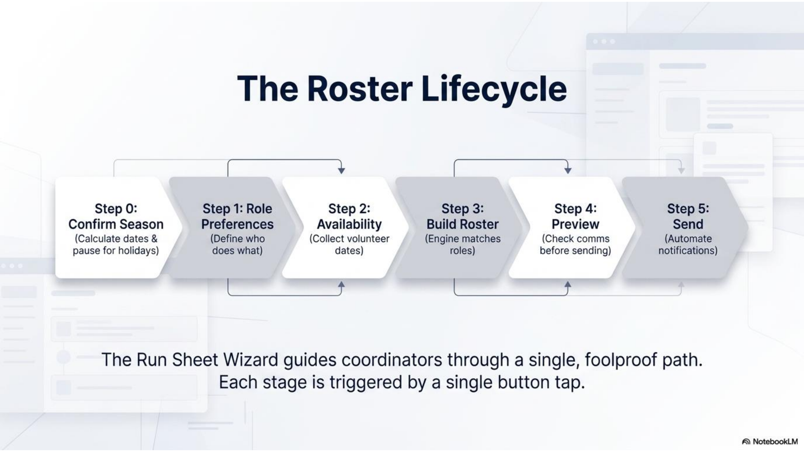
| Step | Name | What happens |
|---|---|---|
| 1 | Confirm Dates | You confirm which dates this build covers. Public and school holidays are already marked, and you can drop a date or add a one-off one. |
| 2 | Roles | You check which roles are needed for this build and how many people each needs. They start as they were last time. |
| 3 | Role Prefs | Volunteers (or the coordinator) set which roles each volunteer is willing to do: "Yes, I do this", "Happy to fill in" or "Not for me". Set once, remembered for every future build, and editable on Profile pages. Often skipped. |
| 4 | Availability | Rostas asks each volunteer which upcoming dates they can do, by the Rostas app, email or text. Or you can skip the poll and build with everyone available. |
| 5 | Build & Check | The engine fills every slot it can, then the roster opens on the Board so you can check it, make swaps or replacements, and refill or rebuild if needed. |
| 6 | Notify | Rostas tells every rostered volunteer their assignments, by the app, email or text. Automatic reminders follow closer to the date, with no further action needed. |
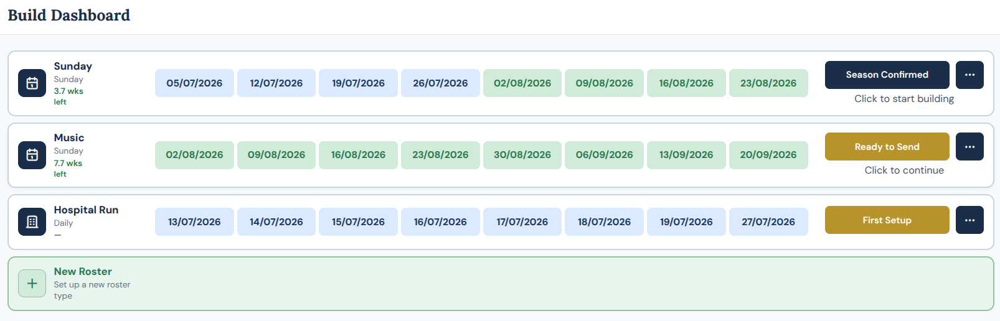
Key Concepts
Availability — Simple for Volunteers
Before each build, Rostas can email your volunteers asking which upcoming dates they're available for. Volunteers receive a personalised link and see a simple calendar of dates. Everything starts as Available — volunteers only change the dates they can't make.
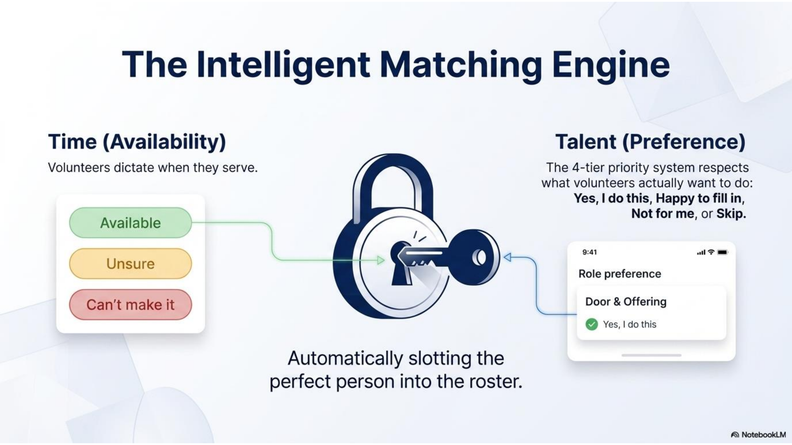
The Intelligent Matching Engine
The roster engine doesn't fill slots blindly. It uses a four-tier priority system that respects both when volunteers can serve and what they actually want to do:
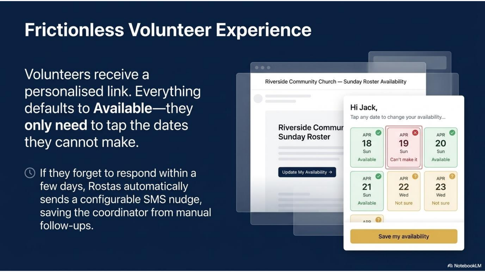
| Tier | Availability | Role match | Priority |
|---|---|---|---|
| 1 | ✅ Available | Primary role (Yes, I do this) | Highest — assigned first |
| 2 | ✅ Available | Fillable role (Happy to fill in) | Second choice |
| 3 | ❓ Not sure | Primary role | Third — provisional |
| 4 | ❓ Not sure | Fillable role | Last resort |
Within each tier, Rostas picks the volunteer who has served least in recent weeks (counting all their roles), then whoever did this particular role longest ago — keeping things fair automatically over time without any manual tracking.
The Roster Board
The Board is your day-to-day view of the current roster. It shows every slot, every date, and every volunteer assignment at a glance. A traffic light colour system tells you instantly what's filled, what's pending, and what needs attention.
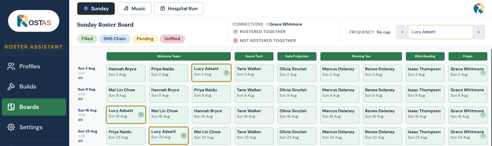
The Automated SMS Replacement Chain
When a rostered volunteer can't make it, they tap a link in their notification email. Rostas immediately starts working through the backup list — no coordinator involvement needed.
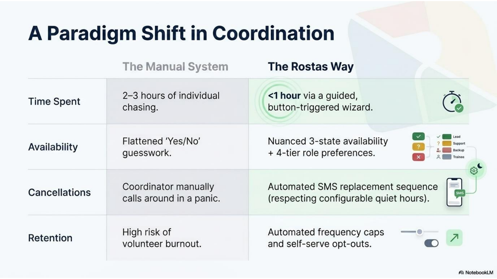
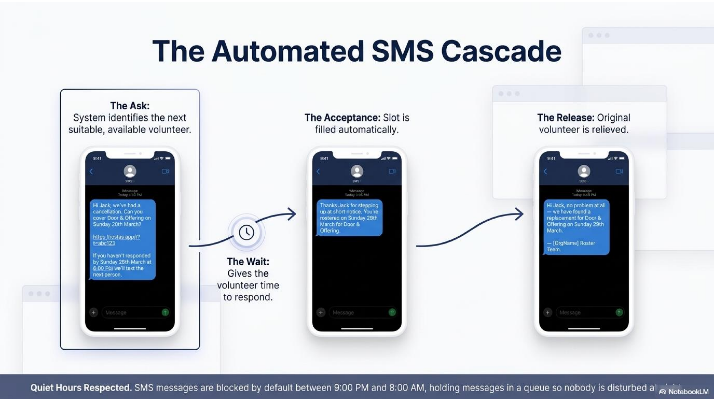
Every reply-seeking message — the automated chain above, Manual Replacement, and a Cross-Roster Ask — decides how to reach the volunteer the same way, in this order:
| Tier | Condition | What the volunteer gets |
|---|---|---|
| 1 — App push | Has the Rostas app installed with notifications on | A push notification straight to their phone — tap it, answer Yes/No in the app. No code, no SMS. |
| 2 — SMS link | No push notification received | A short SMS carrying a direct personalised link — no app, no code, nothing to type. |
The Tier 2 message contains a personalised link straight to the volunteer's accept / decline page. There's nothing to type and no separate entry page to visit — they just tap the link in the text.
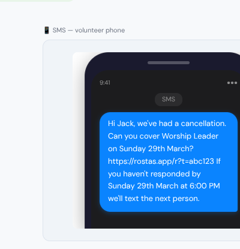
Looking After Your Volunteers
Rostas is designed with your volunteers in mind, not just your roster.
| Feature | What it does for your volunteers |
|---|---|
| Frequency caps | Set a maximum number of times each volunteer can be rostered per number of weeks. The engine never exceeds this, even if they're always available. |
| Quiet hours | No automated SMS during the quiet window you set in Settings (default 9pm–8am). Volunteers are never disturbed at night. |
| Self-serve opt-out | Volunteers can pause or opt out of SMS and email at any time using a link in any Rostas message — no need to contact you. They may be happy just to print out their roster. |
| Relational rostering | Rostas tries to schedule family members and preferred buddies on the same dates — making it easier to serve together or share transport. |
Who Does What
Rostas is designed so that most of the routine work happens automatically. Here's how responsibilities divide between you, your volunteers, and Rostas:
| Who | What they do |
|---|---|
| You — the coordinator | Run the 6-step wizard each cycle, review the built roster, handle exceptions, manage volunteers and settings |
| Your volunteers | Respond to availability emails, set role preferences, accept or decline replacement requests by tapping the link in a text or email, or answering in the app. |
| Rostas | Everything in between — building the roster, sending notifications, chasing replacements, sending reminders, enforcing frequency caps |
Where to Start
The guide is organised into seven parts and an appendix. Jump to the section that matches where you are right now:
| Part | Title | Start here if… |
|---|---|---|
| A | Introducing Rostas | You're here ✓ |
| B | Setting Up Rostas | Rostas is brand new at your organisation and needs initial configuration |
| C | Profiles | Your volunteers aren't in Rostas yet, or you need to add, import, or edit them |
| D | Insights | You want to see whether an upcoming roster has enough people, and what would help |
| E | The Roster Cycle | Your volunteers are in and you're ready to build a roster |
| F | Using the Board | You need to manage replacements, make changes between builds, or print the roster |
| G | Settings & Troubleshooting | You need to change a setting or something isn't working as expected |
When you open Rostas for the first time, the setup wizard runs automatically. It takes about five minutes and covers the essentials — your organisation name, your contact details, and a quick SMS test to make sure everything is working before your first roster build.
The wizard runs once. After it's complete, Rostas opens directly to the Builds dashboard on every future visit.
The Setup Wizard
The wizard has five steps — Licence, Organisation, Your Details, SMS and Done — shown across the top of the screen. You can see at a glance how far through you are and what's coming next.
Step 1 — Licence
Enter the licence key from your Rostas welcome email (it looks like RSTS-XXXX-XXXX-XXXX; you can also find it in your account at rostas.app) and click Validate →. Rostas checks it and moves you on to your organisation's details. If the key isn't accepted, check it for typos, then contact support@rostas.app.
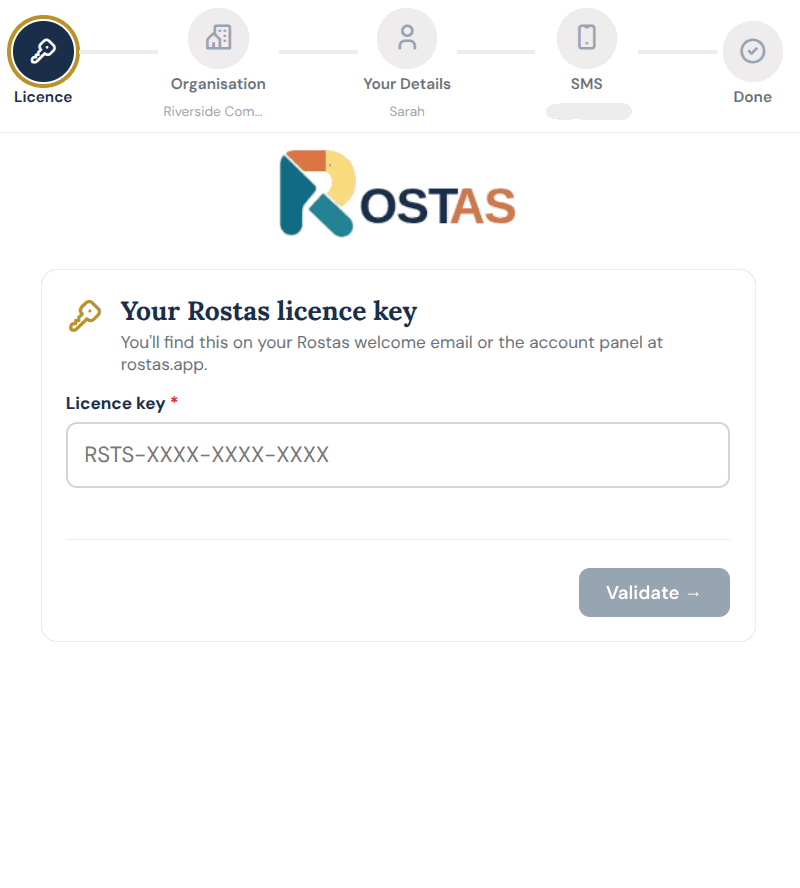
Step 2 — Your Organisation
The first step establishes your organisation's identity. The name you enter here appears in every message sent to volunteers — availability emails, roster notifications, and SMS reminders.
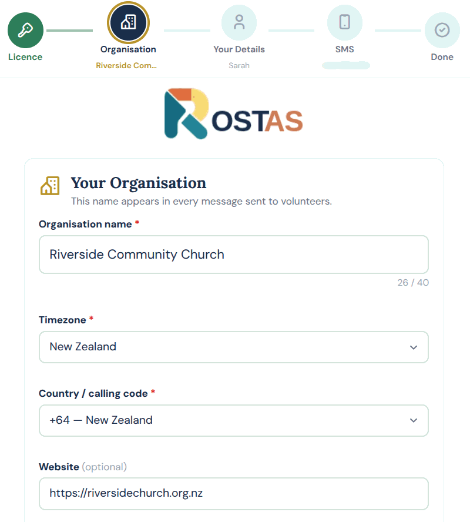
| Field | What to enter | Required? |
|---|---|---|
| Organisation name | Your organisation's full name as you want it to appear to volunteers — e.g. "Riverside Community Church". Maximum 40 characters. | Yes |
| Timezone | Select your timezone from the dropdown. This controls all scheduling and quiet hours. | Yes |
| Country / calling code | Select your country. This is used to format volunteer phone numbers correctly for SMS delivery. | Yes |
| Website | Optional. Your organisation's website URL — must start with https:// | No |
Click Next → when all required fields are filled. The button stays disabled until everything is valid.
Step 3 — Your Details
Step 3 captures the primary coordinator's contact details. These are used for the SMS test send, error alerts, and the bottom of the coordinator app sidebar.
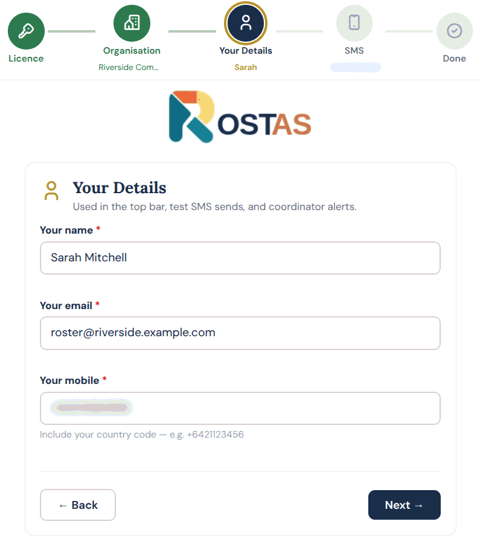
| Field | What to enter |
|---|---|
| Your name | Your full name as coordinator — e.g. "Sarah Mitchell" |
| Your email | Your email address — receives error alerts. (The “no replacement found” email goes to the Organisation email in Settings, or to a roster's own coordinator if it has one — see The SMS Replacement Chain.) |
| Your mobile | Your mobile number in full international format — e.g. +6421123456. Must include country code. |
Step 4 — SMS Test
Before your first roster build, Rostas verifies that SMS is working. This step sends a real test message to your mobile so you can confirm everything is set up correctly.
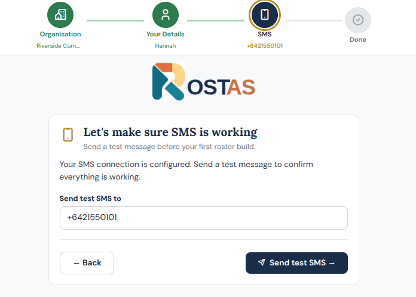
Your mobile number is pre-filled from Step 3. Tap Send test SMS → and wait for the message to arrive on your phone — usually within 30 seconds. Once received, a green confirmation appears and the Next button enables.
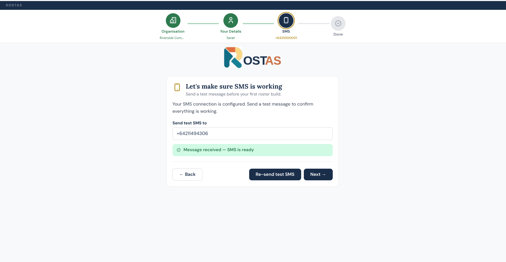
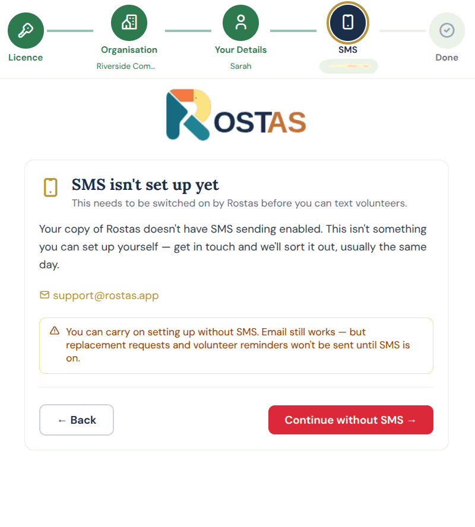
Step 5 — Done
Once SMS is confirmed, the wizard completes and Rostas is ready to use.
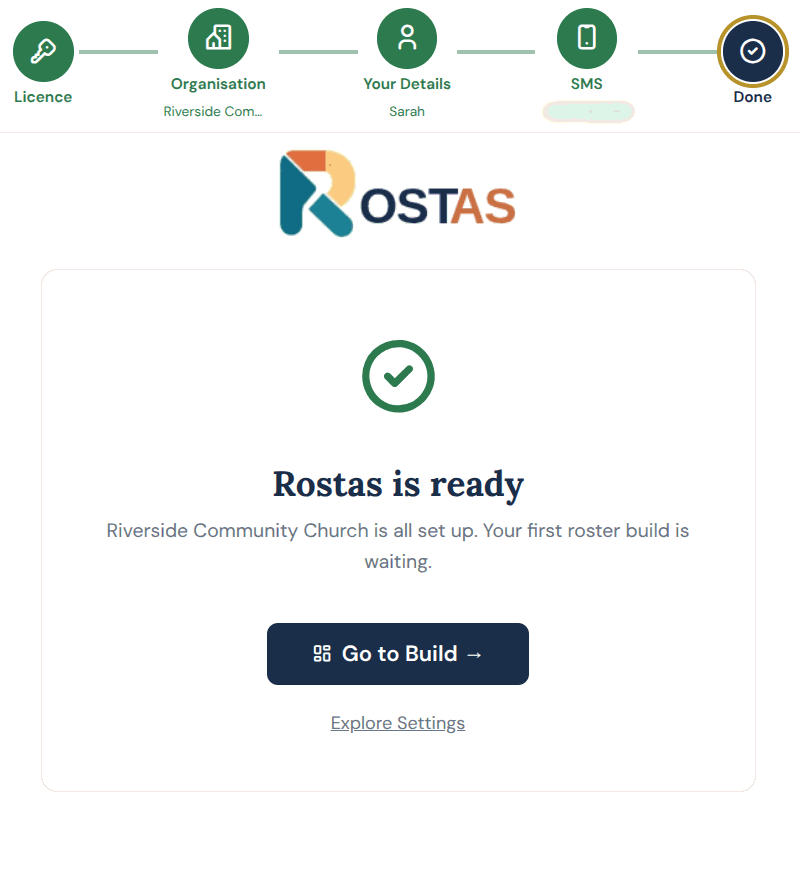
From here you have two options:
- Go to Build → — takes you straight to the Builds dashboard, ready to start your first roster cycle. This is the right choice if your volunteers are already imported.
- Explore Settings — opens the Settings view if you want to review or customise anything before you import volunteers or do your first build.
Your coordinator link
When set-up finishes, Rostas emails you a coordinator link (to the Organisation email, or your own email if that's blank). This link is how you open Rostas from now on — bookmark it on every computer you use. It works like a password for the coordinator screens, so don't forward it to volunteers or post it anywhere.
If you open Rostas without it, you'll see a Coordinator sign-in box: paste your coordinator link there, or click Email me the coordinator link to have it sent again. A device you've signed in on remembers you, so this is usually only needed once per device.
Put Rostas on your desktop
Most coordinators use Rostas on a computer that's also signed in to their personal Google account. Google can't open Rostas when a browser has two Google accounts signed in, so the best setup is a separate Church profile in Chrome with only the church account in it, and a Rostas icon that always opens there. You do this once, and from then on you just click the icon.
- Open Chrome as normal.
- Click your profile picture at the top right, just left of the three dots (if you have no picture, it's a small round person outline).
- Click Add (some versions say Add Chrome profile).
- In the new window, click Sign in and sign in with the church Google account only, the one that owns your copy of Rostas. Don't add any other accounts to this profile.
- If Chrome asks "Turn on sync?", either answer is fine.
- Name the profile Church and pick a different colour, so you can tell its windows apart, then click Done.
- In the Church window (check the name and colour at the top right), open your coordinator link and wait for Rostas to load.
- Click the three dots (top right) → Cast, save and share → Install page as app…
- Name it Rostas and click Install. Rostas opens in its own window, with the Rostas R as its icon.
| Computer | Where the Rostas icon goes |
|---|---|
| Windows | On your desktop. To keep it handy, right-click the Rostas icon on the taskbar at the bottom of the screen → Pin to taskbar. |
| Mac | In Launchpad and in Finder → Applications → Chrome Apps. While it's open, right-click its icon in the Dock → Options → Keep in Dock. |
What's Next
Rostas is set up. Next, get your volunteers in: head to Part C — Profiles to import or add them and set up how each one serves. Once your profiles are in, Part E — The Roster Cycle walks you through building your first roster.
- ✓ Organisation name set
- ✓ Coordinator contact details set
- ✓ SMS test confirmed working
- Volunteers imported or added
- Full profile set up for each volunteer in your first roster build
The Profiles section is where you manage everyone who serves in your organisation. Access it by clicking Profiles in the sidebar. From here you can view all volunteers, add new ones, edit details, view role lists, and manage per-roster settings like role preferences, frequency caps, and availability.
Importing your volunteers from CSV
The quickest way to get your volunteers into Rostas is to import a spreadsheet — from a previous roster system, a church database, or even a simple contact list. This is how most organisations start. If your volunteers already live in another system, you may be able to sync them automatically instead — see the Connector Appendix.
Open the Profiles list and click Import Volunteer CSV on the toolbar. The import runs in three steps.
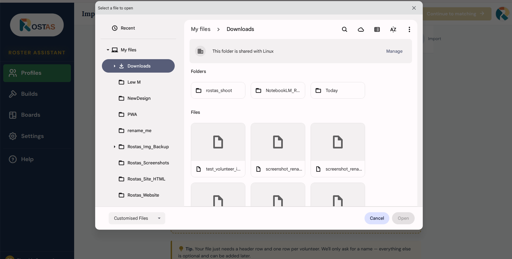
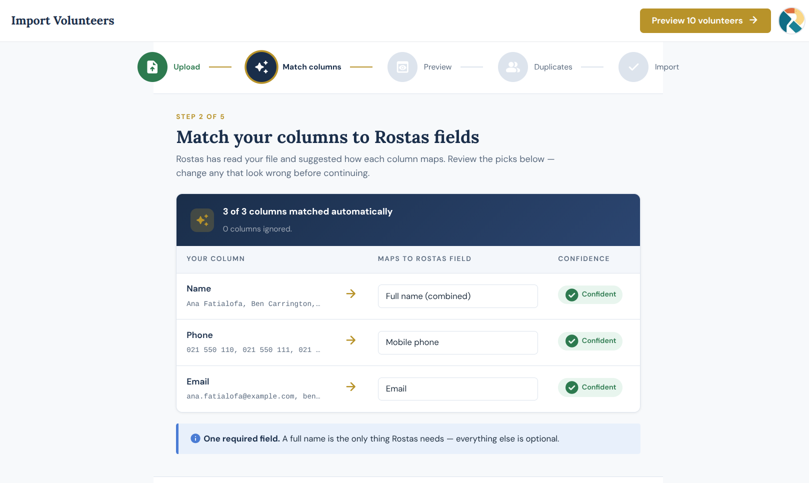
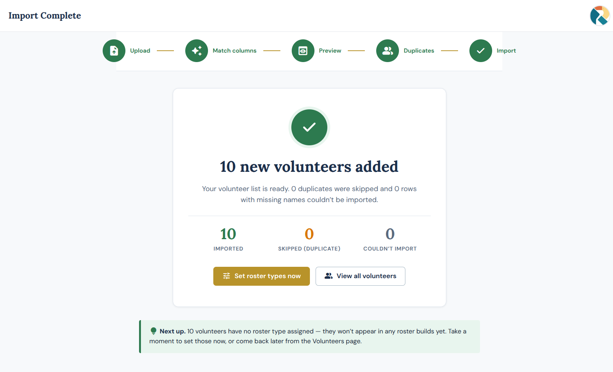
Adding a volunteer manually
For one-offs — a single new volunteer between imports — click Add Volunteer on the Profiles toolbar. Fill in their details and save; they appear in the list immediately and can be included in your next build.
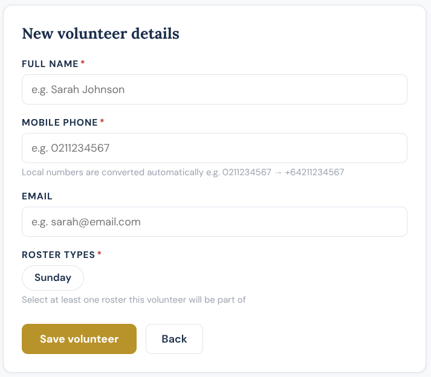
| Field | What to enter | Required? |
|---|---|---|
| Full name | As you want it to appear in rosters and messages | Yes |
| Mobile | e.g. +6421123456 | Yes (for SMS) |
| For notifications and availability requests | Yes (for email) | |
| Roster types | Which rosters they serve in — tick all that apply | Yes |
The profiles list
Once your volunteers are in, the Profiles list shows everyone — name, roster types, phone, and email — in one place. Search by name, email, or phone, or filter by Roster Type at the top of the page, or Active, Inactive, or All using the chips below the search bar. Click any row to open that volunteer's profile.
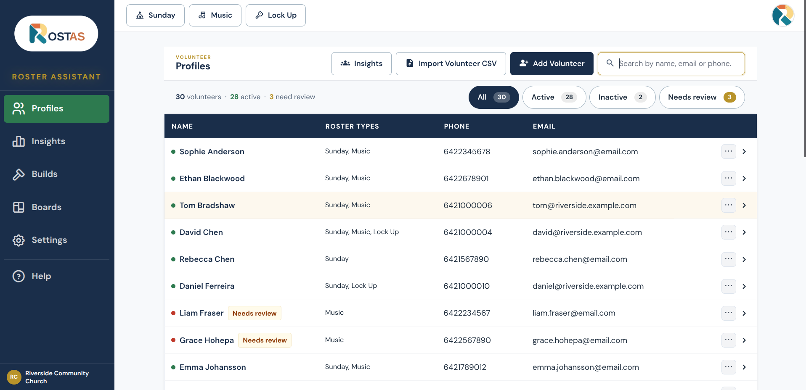
Finding volunteers with no roles set
A volunteer who is ticked for a roster but hasn't been given any roles on it is left out of that roster's builds — Rostas has nothing to place them in. The No roles set button finds these people so you can set their roles in one sitting.
- Pick a roster using the pills at the top of the Profiles page. The No roles set button next to Insights shows how many volunteers on that roster still have no roles.
- Click the button. The list narrows to just those volunteers, and the button turns gold. Click it again to see everyone.
- Click a name to open their profile. A bar at the top shows No roles set, the roster, and where you are in the list (for example "volunteer 2 of 3").
- Choose their roles and save. Then press Next — the arrows now step only through the volunteers who still have no roles, and anyone you've just set up drops off the list.
- When you're finished, click Back to Profiles in the bar.
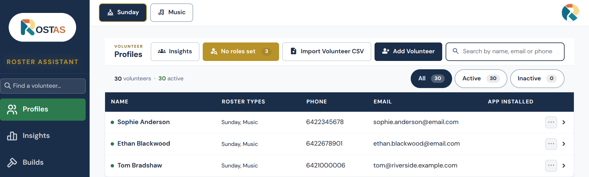
The same button is on every volunteer's profile, on the row that shows where you are in the list. Its count is for the roster tab you're looking at, and it changes when you switch tabs. Click it to start stepping through the people with no roles from wherever you are; click it again (it's gold while you're doing this) to go back to stepping through everyone on that roster.
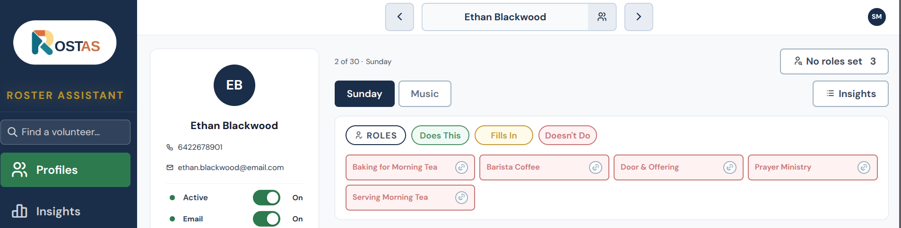
The Profile Detail Page
Click any volunteer in the list to open their profile. This is where you manage everything about that person — their contact details, which rosters they serve in, the roles they do, how often they serve, who they serve alongside, and their availability. The left panel holds their contact details and a tab pill per roster type; the right panel holds the settings for whichever roster tab is selected, so each roster a volunteer serves in has its own independent setup.
Contact details & toggles
The left panel shows the volunteer's name, phone, email, and status, with four toggles that control how Rostas treats them, plus an automatic App Installed indicator described below:
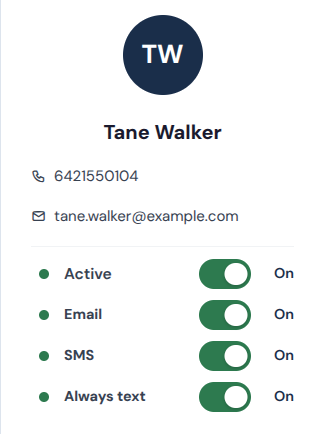
| Toggle | What it controls |
|---|---|
| Active | Whether this volunteer appears in roster builds. Turn off to pause someone without deleting them. |
| Whether they receive email notifications. Turn off if they've opted out or prefer SMS only. | |
| SMS | Whether they receive SMS messages at all. Turn off if they've opted out of texts. |
| Always text | Opts this volunteer in to the day-before reminder text even when the reminder mode would otherwise skip them (see Settings — reminder mode). Useful for volunteers who reliably miss email. In settings Text non-responders (recommended) texts only volunteers with no email, those who haven't confirmed the reminder email, and anyone set to "Always text" in this profile details page. |
It's a handy way to spot who's worth encouraging toward the app: a red dot is your cue to mention it next time you see that volunteer, or to send them their app link straight away. Getting more volunteers onto the app pays off twice over — it makes it easier for them to check and adjust their own roster, and every reminder the app can deliver in place of a text is one less SMS your organisation pays for.
Issuing a volunteer a new link
Every volunteer's emails, texts and app carry a link that is private to them. Anyone holding that link can see their roster, reply for them and set up the app as them, so treat it like a key. If a link may have got into the wrong hands, give the volunteer a new one: open their profile, click the ⋯ button beside Edit contact details, and choose Issue new link.
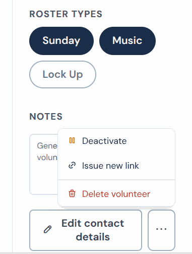
Use it when:
- A volunteer forwarded one of their emails or texts to someone else.
- Their phone was lost, stolen, or sold with the app still on it.
- They see "This link has already set up the app on 3 devices" when setting up the app. Each link can set up the app on up to three phones or tablets.
Rostas asks you to confirm first. Straight away:
- Their old links stop working, including links in earlier emails and texts. Anyone who opens one sees "This link has been replaced — please use the link in your latest email or text."
- The app signs out on every phone it was set up on, and app notifications stop until they set it up again.
- Their next email or text carries the new link. They set the app up again from that link, just as the first time (see How volunteers install it).
Roles — what they do
The Roles section on the right panel is where you set which roles this volunteer performs in this roster. Each role shows as Does This, Fills In, or Doesn't Do
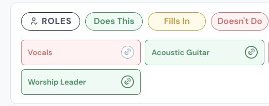
Linking roles together
Sometimes two roles should travel together — Say a worship leader always also plays an acoustic guitar. Role linking handles this. Both roles must be set to Does This first; then click the link icon (🔗) on a role card to open a dropdown of roles you can link it to, and choose the link type.
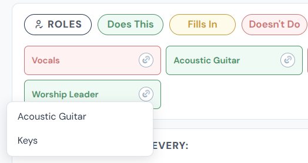
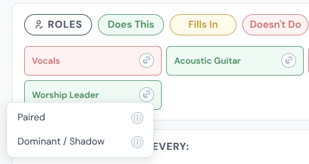
| Link type | How it behaves |
|---|---|
| Dominant — Shadow | One-way pairing. When the dominant role is filled by this volunteer, Rostas pulls them into the shadow role on the same date too — but not the other way around. Use it when one role should drag a second along with it. For example when Sam is worship leading he always plays acoustic guitar, but when Sam is rostered to play acoustic guitar he is not always worship leading. |
| Equal Pairing | Two-way pairing . The two roles are always scheduled together — the volunteer is placed in both or neither. Use it when a volunteer always wants to do both roles together. |
Linked roles are ringed on the profile so you can see the relationship at a glance.
A gold drop-shadow marks the dominant role, a grey drop-shadow its shadow pairing.
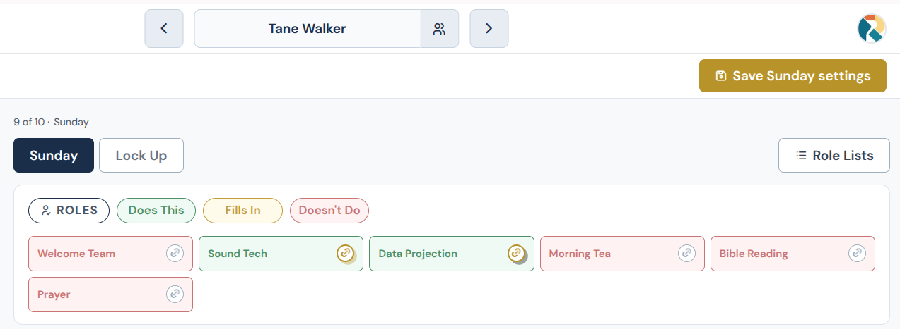
A highlighted green circle border marks paired roles in profile settings.
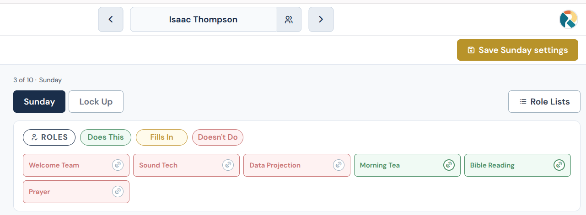
On the Board, the matching assignment cards carry the same colours.
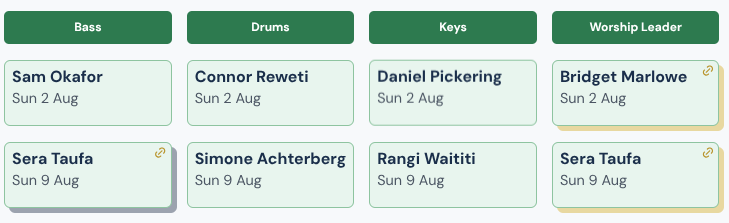
Frequency — how often they serve
The Frequency control — labelled ONCE EVERY — caps how often this volunteer is rostered in this roster, so nobody is over-used even when they're always available. Tap a pill: once every 1wk, 2wk, and so on up to 12wk. If none is set, Rostas uses once every 4 weeks.
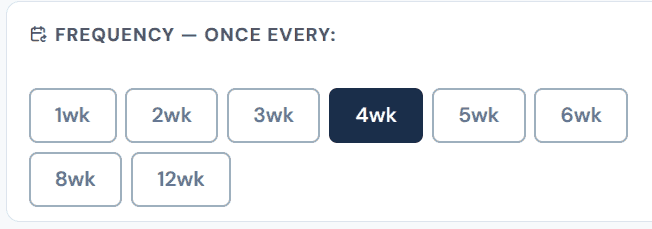
Relational rostering — serving together
Relational rostering asks Rostas to place people together on the same dates — a Buddy they like to serve alongside, or a Household so family members share the same rota. Turn on "Serves With" and pick who, then choose how closely they should be linked: the same date, or the same role too.
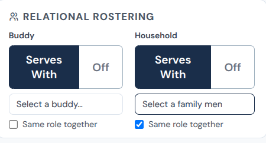
Next roster availability
The availability grid shows this volunteer's responses for the upcoming dates — the same three states they set on their own form:
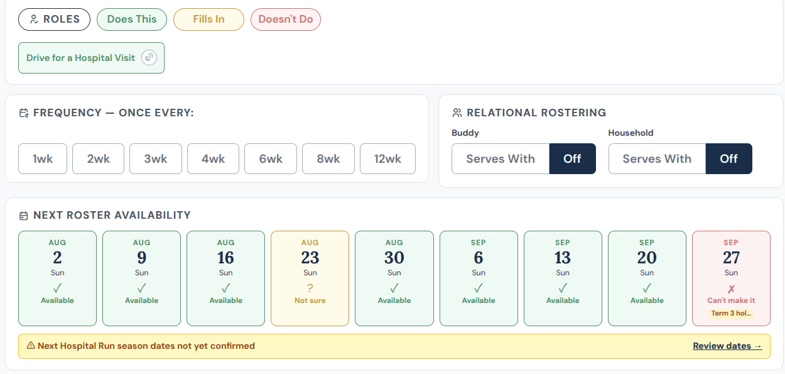
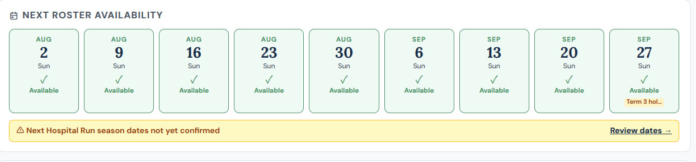
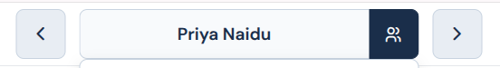
Adding a Volunteer to a New Roster
If a volunteer starts serving in an additional roster type, click the inactive roster tab on their detail page. A confirmation dialog appears — confirm to add them to that roster. Their settings for the new roster start fresh and can be configured from the right panel.
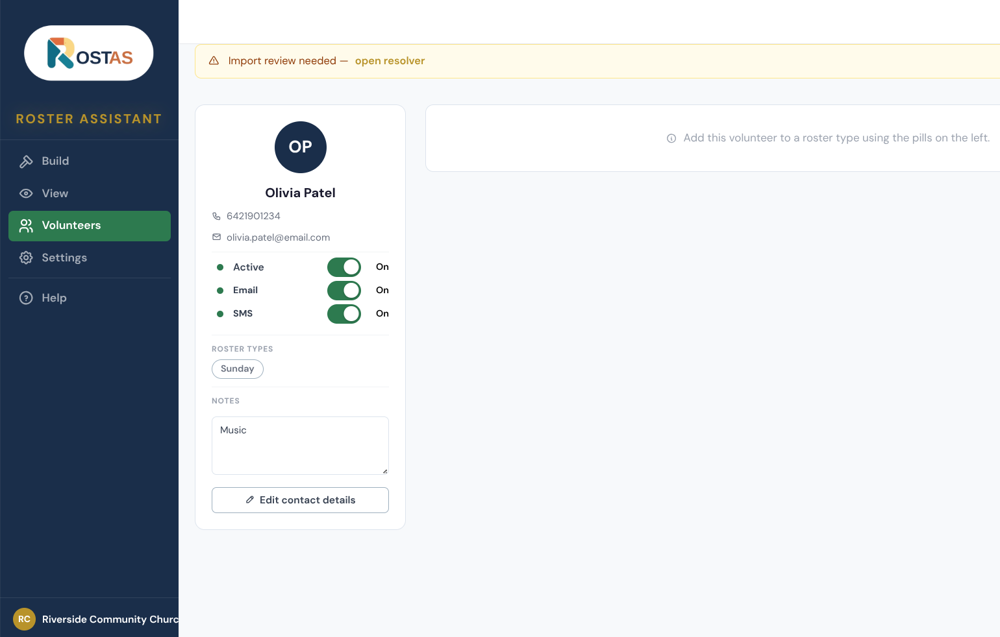
Taking a Volunteer Off a Roster
When someone stops serving on a roster, open their profile and click that roster's navy pill under Roster Types (for example Sunday). A box opens asking Remove from Sunday?. If they're on any upcoming dates, a yellow line at the top says how many.
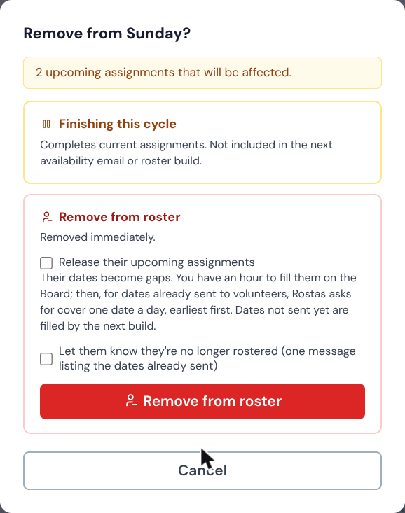
| Choice | What happens | Use it when |
|---|---|---|
| Finishing this cycle | They keep the dates they're already rostered on and serve them. They're not sent the next availability email and are left out of the next roster build. | They're stepping down but will see out the current roster. |
| Remove from roster | They're off the roster straight away: no more availability emails, and they're left out of builds. Their upcoming dates stay as they are unless you tick Release their upcoming assignments. | They've stopped now. |
Release their upcoming assignments takes them off every upcoming date on that roster (today's service is left alone; change that on the Board). Each of those cards becomes an empty gap (a red dashed Unfilled card) and the date's count drops, for example from 10/10 to 9/10.
Removing someone straight away is often urgent or sad, so Rostas fills their dates gently rather than sending a burst of requests:
- You have an hour to fill any of the gaps yourself on the Board, for example with someone you've already spoken to.
- Dates whose roster has already gone out: after the hour, Rostas sends replacement requests for one date a day, earliest first, just as if the person had tapped Can't make it. A date you've filled meanwhile is skipped. A date coming up soon is never left until less than two days before it.
- Dates whose roster hasn't gone out yet: nobody is asked; the next roster build fills them, or you can fill them on the Board.
- Roster paused: no requests go out; the gaps wait for you.
Let them know they're no longer rostered starts unticked. Tick it to send the person one message (in the app, or by text) listing every date whose roster had already gone out, for example "you're no longer rostered for Welcomer on Sun 4 Oct, Sun 11 Oct and Sun 25 Oct". Leave it unticked when a message would be unkind or unwanted, for example if they have died, and tell them or their family yourself.
What Volunteers See
Volunteers interact with Rostas through personalised links, and — if they've installed it — the Rostas app. Installing is entirely optional: nothing is ever gated behind it, and a volunteer who never installs keeps using email and SMS links exactly as before. These are the main things volunteers are sent:
| Page | When it's sent | What volunteers do |
|---|---|---|
| Availability form | When you run Step 4 (Availability) of the Roster Wizard | Mark which dates they're available, not sure, or can't make it. In the app, volunteers on more than one roster type see a pill for each and set availability independently. |
| Roster notification | When you send notifications in Step 6 | View their assignments, confirm a pending slot, tap "Can't make it", print their roster. In the app this opens the native Your Roster screen instead of a browser tab. |
| Replacement request | Automatically during the SMS replacement chain, Manual Replace, or a Cross-Roster Ask | Accept or decline a slot — with the app installed, a push notification opens an in-app Yes/No screen; otherwise a direct link by SMS |
| Reminder | Automatically before each service they're rostered for | An email a few days before (3 by default), then on the day before an app notification or, depending on your settings, a text. Tap “Yes, I'll be there” or “Sorry, I can't make it”. |
| Role preferences | When you send them in Step 3 (Role Prefs) of the Roster Wizard (optional) | Choose, for each role, “Yes, I do this”, “Happy to fill in” or “Not for me”. |
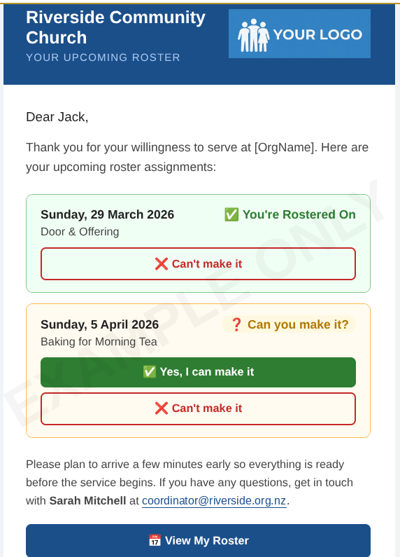
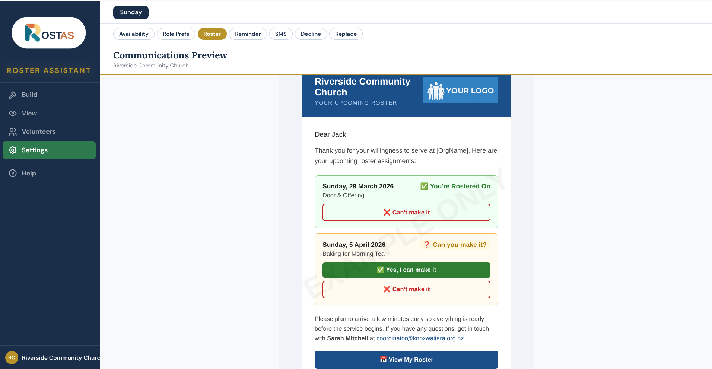
When an old link no longer applies
Volunteers sometimes tap a link in an older email or text after things have moved on: you've replaced them on the Board, or they've already said they can't make it. Rostas checks every answer against the roster as it is now, so an old link can never undo a change you've made or put back someone who has been replaced. Instead of changing anything, the volunteer sees a plain explanation:
| What happened | What the volunteer sees |
|---|---|
| They were replaced or taken off that date | "This roster has changed. You're no longer down for [role] on [date]. Nothing has been changed." They're asked to contact their coordinator if that's unexpected. |
| They declined, then tapped Confirm or "Yes, I'll be there" in an older message | A note that they told us they can't make it and that Rostas is already asking others to cover. If they can come after all, they're asked to contact their coordinator, so two people don't turn up. |
| They tap "Can't make it" again | A note that Rostas is already finding someone. |
| They decline while the roster is paused | A request to let their coordinator know, because Rostas can't ask anyone else while the roster is paused. |
| They say Yes to a replacement request after the slot was filled or removed | A thank-you and a note that someone else has already stepped in. Nothing on the roster changes. |
The Rostas App
Rostas has an installable app — technically a "Progressive Web App", not something from an app store — at mobile.rostas.app. It's a front end for exactly the same data volunteers already see by link: nothing changes about what Rostas does, only how it's reached.
Across the top of every screen is a navy header: the R button (tap it from anywhere to go back to Home), your church name, and a three-line Menu button on the right. The Menu holds News, Podcasts and Settings; News and Podcasts only appear once your church has filled in their addresses (see News and podcasts in the app).
| Screen | What it shows |
|---|---|
| Home | A greeting; their latest notification shown as a message bubble with a one-tap Respond when it's a replacement request awaiting their answer; their next assignments under My Roster, each with a one-tap Can't make it; and a Future availability strip of upcoming weeks to scroll through. |
| Your Roster | Upcoming assignments. A pending assignment shows an amber Confirm pill (tap for a Yes/No sheet); any assignment can be released with the red Can't make it pill. |
| Your availability | The same date-picker as the emailed availability form. Volunteers serving on more than one roster type see a pill per roster and set each independently. |
| News (Menu) | This week's church news sheet, with the date it's for. The In this Update links at the top jump down the sheet; outside links open in the phone's browser. |
| Podcasts (Menu) | Sunday messages: your latest recorded sermons, newest first, each with its title, speaker, date, approximate file size and a Play button. One plays at a time, with play and pause on the lock screen; leaving the Podcasts screen stops it. Nothing downloads until Play is tapped, and each file is large, so Wi-Fi is best. |
| Settings (Menu) | A push notification toggle, and Install / Remove-app rows. |
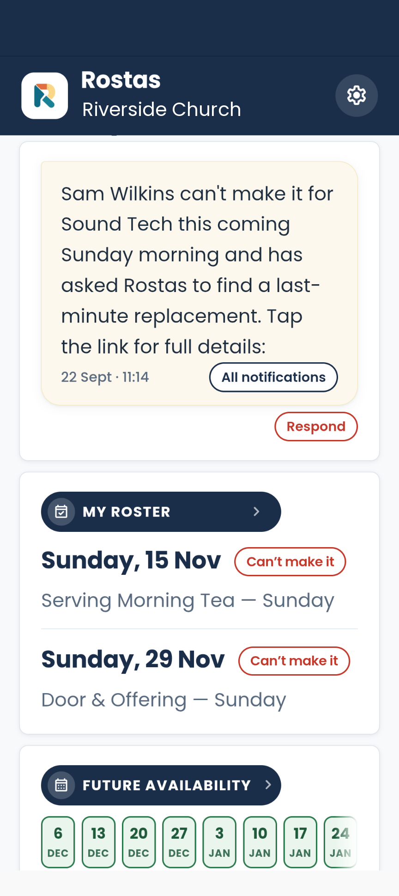
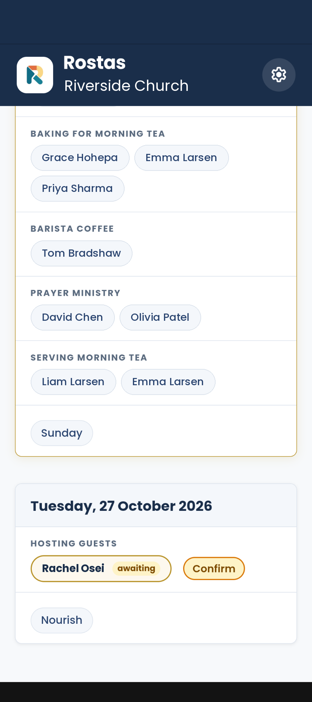
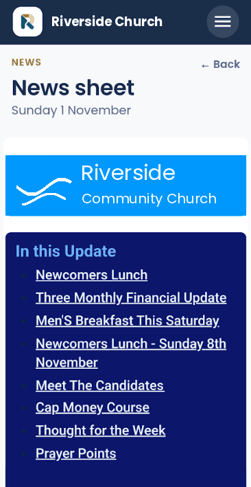
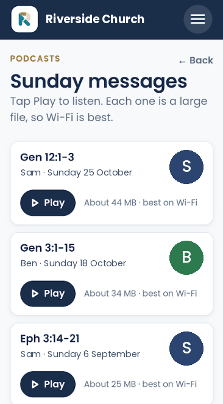
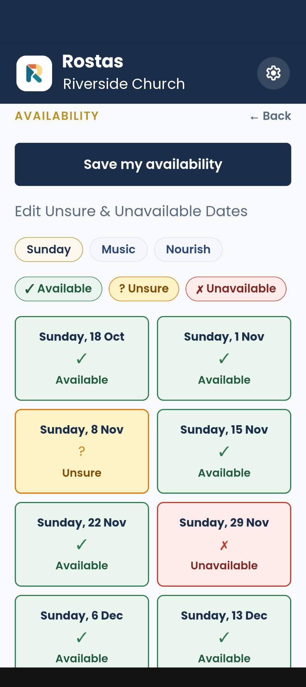
How volunteers install it
Every volunteer email carries a permanent "Get the app" card in the footer — automatic, not something you configure per email. To send someone their link straight away, see Sending a volunteer their app link. Installing looks different depending on the volunteer's phone:
| Platform | How they install | What they get |
|---|---|---|
| Android | They tap their link, then tap the Install Rostas card on the app's Home screen (or Chrome's ⋮ menu → Install app). The new icon opens already set up. | Full value — once a notification is confirmed delivered, no text is sent, saving your church a text every time one would otherwise go. |
| iPhone | They tap their link. Rostas opens in Safari on a "First, put Rostas on your Home Screen" page with a Show me how button, which walks them through Safari's five taps one picture at a time: ⋯ → Share → View More → Add to Home Screen → Add. The new icon opens already set up — nothing to copy or paste. | Day-before reminders arrive as a notification only, with no text, unless the notification fails. Replacement requests arrive the same way: a notification, with no text unless the notification fails — the same as Android. |
| iPad | Safari's Share button (top of the screen) → Add to Home Screen → Add. The app shows these steps in one line; the picture guide is iPhone only. | Same as iPhone. |
The Show me how guide is also on the app's Home screen and in the app's Settings (the App row), so a volunteer can reopen it at any time. It ends on a Your turn list that stays at the top of the screen while they tap through Safari's menus.
Helping someone set up an iPhone. Three things catch people out:
- It must be Safari. If the link opened in another browser or inside an app, the page says so. Open the link from their text message instead.
- Leave "Open as Web App" switched on (green) in the last step. If it's off, the icon just opens a Safari tab.
- If the icon shows "Set up this device", it was added from the wrong page. Delete the icon, tap their link again, and add it from there.
"This link has already set up the app on 3 devices." Each volunteer's link can set up the app on up to three phones or tablets. If they need another, or have changed phones more than twice, issue them a new link.
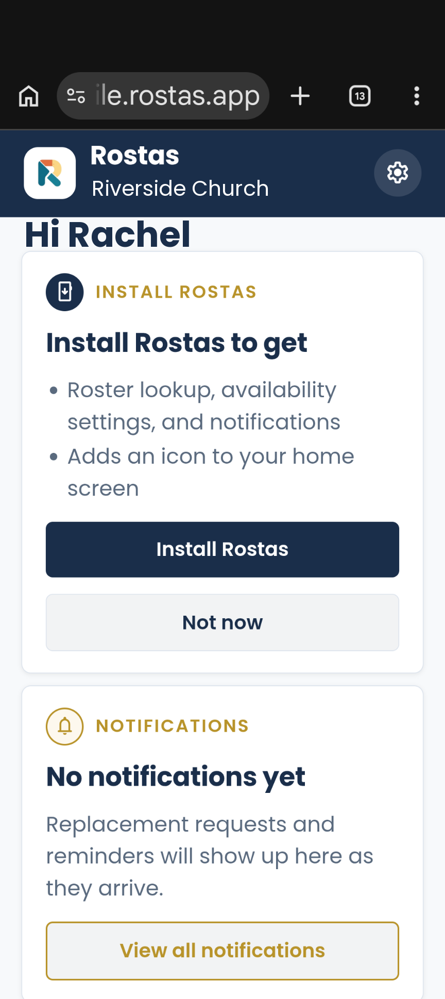
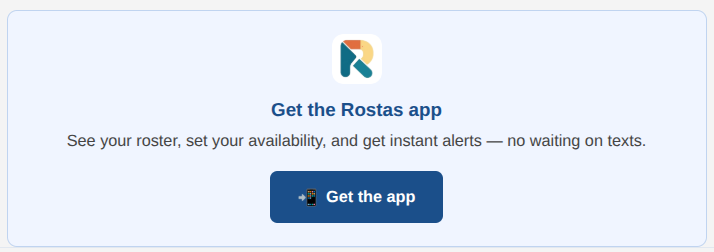
Sending a volunteer their app link
You don't have to wait for the next roster email. From the Profiles list you can send any volunteer their own app link straight away, by text or by email. Click the ⋯ button at the right-hand end of their row and choose one of the two Install App options.
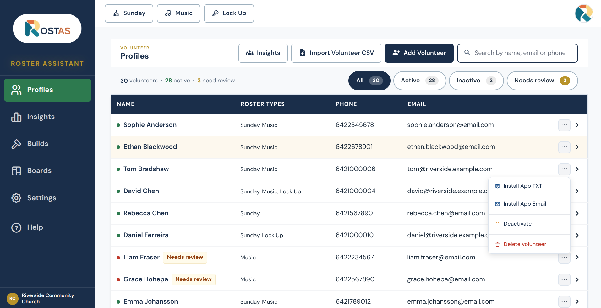
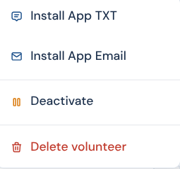
| Option | What it does | Use it when |
|---|---|---|
| Install App TXT | Texts the volunteer their own app link. They tap it on their phone and follow the steps in How volunteers install it. | Most of the time. The text arrives within seconds, which suits helping someone in person. |
| Install App Email | Emails the same link, with a Get the app button. | The volunteer has no mobile number on file, the text didn't arrive, or the phone can't receive texts (a tablet, or a phone with no SIM). They need to open the email on the phone or tablet they want the app on. |
Rostas confirms with a short message, such as Text sent to Judy Aitkinson. If it can't send, the message says why and suggests the other option. The usual reasons are:
- The volunteer has no mobile number or no email address on file.
- The volunteer has opted out of texts or emails. You can check this with the toggles on their profile.
- Texts are held during your SMS quiet hours (see Settings). Use Install App Email, or try again later.
Both options send the volunteer's existing link, so it's fine to send it again if they lose it. Remember that each link can set up the app on up to three phones or tablets. If someone needs more, issue them a new link.
Insights is your at-a-glance health check for an upcoming roster — reachable any time from the Insights item in the side navigation (it sits right below Profiles), or via the "Insights" shortcut buttons on Profiles and a volunteer's own detail page. Insights refreshes whenever the roster, your volunteers or Settings change, so it always reflects your current forecast. It's worth a look between builds, not just when something's already gone wrong.
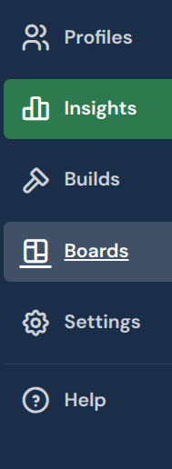
The overview table
Pick a roster type along the top (Sunday, Music, Lock Up, and so on) and Insights shows every one of its roles against your next unbuilt window of dates. Two separate numbers matter for each role:
| Column | What it means |
|---|---|
| People | How many volunteers currently hold this role. |
| Must-fill (Min) | The fewest people needed for the role to actually function, across the whole build window. |
| Ideal (Max) | The full complement you'd like, across the same window. |
| Min status / Max status | Whether the forecast reaches each of those numbers — "OK", or "short by N slots". |
Digging into a role
Click a role's name to jump to its detail card further down the page. Each card repeats that role's numbers, then lists every volunteer linked to it with a pill showing their current frequency cap — and, where it would genuinely help, a second pill suggesting a change.
| Pill | What it means |
|---|---|
| Dark "Nwk current" | This volunteer's actual frequency cap right now (see Frequency on their profile). |
| Amber "Nwk · fills N" | Loosening this volunteer's cap to every N weeks would fill that many extra slots. Change it from their profile. |
| Amber "Reactivating fills N spot(s)" | Shown on an inactive volunteer (red row) — bringing them back would fill that many slots. |
| Gold "Add volunteer · fills about N slot(s)" | Shown when nothing on the current list closes the gap — recruiting one new person to the role would probably fill about that many. |
| No second pill | Correct, not a gap — that volunteer genuinely can't take on more of this role right now. |
You'll also see a line like "People who do this role typically also do about 0.8 other roles" — a reminder that many of your volunteers are shared across roles, which is exactly what the fill-order effect below is about.
Reordering roles
Some shortfalls aren't about headcount at all — they're about fill order. Rostas fills roles top-to-bottom in the order they're listed on Managing Roles: once a volunteer is placed in one role for a date, they're not considered for any role further down the list that same date. A role near the bottom can end up short simply because every volunteer who could have filled it was claimed by an earlier role first.
Where moving a short role earlier in that order would help, its card shows a distinct suggestion:
There are two roster wizards in Rostas. The New Roster Wizard runs once when you set up a new roster type — it defines the name, roles, season dates, and volunteers. The Roster Wizard runs every few weeks to collect availability, build the roster, and send notifications to volunteers.
Both start from the Builds dashboard.
The Builds Dashboard
The Builds dashboard is your home base for all roster activity. Open it by clicking Builds in the sidebar. Every roster type appears as a full-width row — one per roster — so you can see the state of your whole operation at a glance and act on any roster without leaving the page.
The state button
The coloured button on the right of each row tells you where that roster is in its cycle, with a short hint underneath (for example "Click to continue"). Clicking the button, or anywhere on the row, opens that roster's wizard at the right step, so you never have to remember where you left off.
| State | What it means | Clicking it… |
|---|---|---|
| First Setup | A roster that hasn't been built yet. A roster also goes back to First Setup after Reset roster data. | Starts the first build. |
| Season Confirmed | The dates are confirmed and it's ready to begin a build. | Starts building. |
| Gathering | Availability requests have gone out (by app, email or text) and replies are coming in. This is the state you'll sit in for a few days each cycle. | Continues where you left off. |
| Building… | The roster is being built right now. This usually takes a few minutes. | Shows the build's progress. |
| Ready to Send | Built, but volunteers haven't been told yet. | Continues to checking the roster and sending notifications. |
| Active | Notifications sent. The roster is live for the current cycle. | Starts the next build. |
| Paused | The roster is paused: no builds, reminders or replacements run. | Resumes the roster. |
Under the roster's name and day you'll also see how many weeks are left on the current roster (for example "7.4 wks left"). It turns red when the roster is running short and it's time to build again.
The date-chip strip
Across the middle of each row is a strip of date chips: the dates in the roster's last build. The colours are deliberately simple: blue means a date that has already passed, and green means an upcoming date. A roster that hasn't been built yet shows "No roster built yet" instead.
Beside the state button, the ⋯ menu holds the rest of what you can do with a roster: pausing, adjusting dates, roles and season length, resetting, or deleting. See The Build Menu below for the full walkthrough.
The New Roster Wizard
Run this wizard when you're setting up a roster type for the first time — for example, adding a Music roster or a Hospitality team. It takes about 10 minutes and walks you through five steps: Name & Icon, Roles, Season, Volunteers, and Review.
Step 1 — Name & Icon
Give your roster a short name and choose an icon. The name appears in SMS messages, emails, and the coordinator app — so keep it brief and clear. A few words are kept for Rostas's own settings and can't be used as a roster name: Name, Email, Phone, ID, Key and Role.
Step 2 — Roles
Define the roles that need to be filled each time this roster runs. For each role, set a minimum and maximum number of people required. You can add, rename, or retire roles later from Managing Roles.
Step 3 — Season
A season defines the date range, frequency, and day of week for this roster. Rostas uses seasons to calculate which dates to roster for, and to overlay public and school holidays automatically.
| Field | What to enter |
|---|---|
| Start date | The first date this roster will run |
| End date | The last date of a fixed-term season (a perpetual roster needs no end date — see Season type below) |
| Frequency | Daily, Weekly, Fortnightly, 1st and 3rd, 2nd and 4th, or Monthly |
| Day of week | Which day the roster runs — e.g. Sunday, Monday |
| Service starts at | The time the service or event usually starts — e.g. 10:00 AM. Rostas uses it to judge how close the day is when it's finding a replacement (see The SMS Replacement Chain). You can change it later in Settings → Timing & behaviour. |
| Season type | Fixed term (has a real end date) or Perpetual (ongoing — auto-extends). See Season type for the difference. |
| Pause school holidays | Tick if this roster doesn't run during school holidays |
| Pause public holidays | Tick if this roster doesn't run on public holidays |
Step 4 — Volunteers
Select which volunteers from your list will serve on this roster. Tick each volunteer you want to include. Only volunteers already in Rostas appear here — if someone is missing, add them in Profiles first then return to this step.
Step 5 — Review
The final step shows a summary of everything you've set up — roster name, icon, roles, season dates, and volunteer count. Review it carefully before confirming.
Click Create Roster → to finish. Rostas takes you straight into the Roster Wizard for your new roster, ready for its first build, and the roster appears on the Builds dashboard.
The Roster Wizard
The Roster Wizard is the roster cycle you run every few weeks. Each roster type has its own (the page is headed "[Your roster] Roster Wizard") and it takes you through the same six steps every time: Confirm Dates, Roles, Role Prefs, Availability, Build & Check, and Notify.
To start, open the Builds dashboard and click a roster's row or state button. If a build is already under way, you're taken straight back to the step you left off at.
Finding your way around the wizard
Across the top of every step is a row of six circles, one per step. Each says how that step stands: Completed, Skipped, In progress, Ready or Pending. Click a completed or skipped circle to look at that step again; click Confirm Dates at any time to go back to the dates.
Directly under the circles is one bar that stays in the same place on every step: ← Back on the left, "Step N of 6" in the middle, and the main button (for example Continue to Role Prefs →) on the right. Some steps have their own buttons inside the card instead, and then the right-hand button is hidden.
Step 1 — Confirm Dates
The wizard opens on the Build Dates screen, where you confirm which dates this build covers. A small box at the top reminds you how it works: clicking a date removes it from the build, and clicking the blue arrow makes the build longer or shorter. You can also add a one-off date with + Add Date. All of this is explained in Confirming Build Dates below.
When the dates look right, click Continue to Roles → on the Build Dates title row. That saves the dates and takes you to the next step.
Step 2 — Roles
This step shows one card, Edit Roles: every role on this roster with its name, its Min and Max headcount and an Active tick box. You can rename a role, change its headcount, untick it to leave it out, or use + Add a role. What you set here carries forward to later builds. Roles start out as they were last time, so on a routine build you can usually just click Continue to Role Prefs →.
There's no separate Save button: any change you make is saved when you leave the step, whether by Back, Continue, or clicking a circle at the top.
Step 3 — Role Prefs
This step asks volunteers which roles suit them. At the top it tells you how many volunteers on this roster already have role preferences. Volunteers with no roles set won't be rostered. Choose one of these:
| Option | Button | Best for |
|---|---|---|
| Send to everyone on this roster | Notify All then Continue | A first build, or the start of a new season. |
| Send only to volunteers with no roles set | Notify those without roles & continue | A rebuild where only newcomers need asking. |
| I will set them myself now | Open the profiles with no roles | When you'd rather set roles yourself. The profiles list opens filtered to those volunteers, with a "Back to wizard" bar to bring you back. |
| Skip this step | Skip this step | A routine rebuild where everyone's roles are already set. |
The two "send only…" and "set them myself" options only appear when some volunteers have no roles. Each volunteer gets one message: through the Rostas app if they have it, otherwise by email, otherwise by text.
After you send, the step shows how the messages went (for example "Role notifications sent to 24 (18 by app, 5 by email, 1 by text)"), with a count of who has Replied and who has Not yet. Use Remind those who have not replied if you want to give people a nudge, and Continue to availability when you're ready to move on. You don't have to wait for every reply before moving on.
Step 4 — Availability
This step asks: do you want to ask volunteers for their availability first? You have two choices:
| Option | What it does |
|---|---|
| Send an availability poll → Send the poll | Each volunteer gets one message (app, otherwise email, otherwise text) with a link to mark the dates they can and can't do. No login is needed. Volunteers who updated their availability in the last 30 days aren't asked again; the card tells you how many that is. |
| Build with everyone available → Build roster | Skips the poll. Everyone is treated as available on every date and the roster builds straight away. The Availability circle then shows "Skipped". |
Sending takes about a minute ("Sending availability requests…"). Once the poll has gone, the step shows how it was sent (for example "Availability requests sent to 30 (30 by email)") and who has Responded and who has Not yet, with a progress bar. Click Nudge the N who have not answered to chase the rest. The nudge goes by the app or email straight away, and anyone still silent two hours later gets one text (never during quiet hours). When you're ready, click Continue to Build Roster.
Step 5 — Build & Check
This step asks Ready to build roster? If some volunteers still haven't answered the poll, you can nudge them first and come back later. Otherwise choose Build as is → Build roster. Anyone who hasn't replied counts as available.
The roster engine looks at every volunteer's availability, role preferences, how recently they've served and how often they want to serve, and fills every slot it can (see The Intelligent Matching Engine). A build can take up to 5–10 minutes for a big roster. When it's finished, the Roster Board opens by itself.
Checking the roster on the Board
The Board is where you check the roster before anyone is told. Until you send, it shows the wizard's step circles across the top and a bar with ← Back to wizard, "Step 5 of 6", and three buttons:
| Button | What it does | Use it when |
|---|---|---|
| Refill roster | Fills only the empty slots, using the latest availability, role settings and profiles. Everyone already placed stays put, including your swaps and replacements. | You're happy with the roster but some slots are still empty (for example after late availability replies). |
| Rebuild roster | Clears every assignment that hasn't been sent yet and decides the whole roster again. Your manual swaps and replacements are lost. Dates already sent to volunteers are never touched. | You've changed something big (roles, dates, lots of availability) and want a fresh roster. |
| Send notifications → | Tells the volunteers their roster. See below. | The roster looks right. |
When you click Send notifications, a box shows exactly what will happen before anything goes: how many volunteers will be told by the Rostas app, by email and by text (with the cost of the texts), anyone who can only be texted and must wait until quiet hours end, anyone who can't be reached at all, and a warning listing any roles still below their minimum. Click Send notifications in the box to go ahead, or Cancel to keep working.
Step 6 — Notify
After you send from the Board, the wizard opens on the Notify step. While messages are going out it shows "Sent N of M so far". You can leave the page and sending carries on by itself. You can look at the Board meanwhile (Look at the Roster Board), but changes there are paused until sending finishes. The Notify circle reads "Sending…" until it's done.
Each volunteer gets one message with their roles and dates and confirm and decline links: through the Rostas app if they have it, otherwise by email, otherwise by text. When it's done, the step shows when notifications were sent and how many people were told and how (for example "Roster sent to 29 volunteers (29 by email)"). It also tells you about anyone who wasn't reached:
- Text-only volunteers during quiet hours: their text waits until quiet hours end.
- Couldn't be reached just now: the message didn't go through.
- No app, email or phone number: they can't be told; add their details on their profile.
If anyone can still be reached, a Send to the N not yet reached button tries them again. When you're ready to start the next roster, click Start Next Cycle.
- Reminder email sent 3 days before each service date (change this in Settings → Timing & behaviour → Reminder days before service)
- The day before, an app notification or a text, depending on Settings → Timing & behaviour → Day-before reminder texts
- If a volunteer taps "Can't make it", the SMS replacement chain starts automatically
The Build Menu
The ⋯ menu beside each row's state button on the Builds dashboard holds everything you do with a roster between builds — pausing it, adjusting its dates or roles, changing its season length, clearing its data, or deleting it outright. Click it to open a pop-up of options.
| Option | What it does |
|---|---|
| Pause roster / Resume roster | Temporarily stops all activity for this roster — no builds, reminders, or replacements — without losing any history. The same option resumes it. See below. |
| Manage Dates | Opens the Build Dates screen on its own, so you can adjust which dates this roster runs on — remove one, shift the build boundary, or add a one-off extra date. See Confirming Build Dates below. Changes apply from the next build onward — dates already built are never changed retroactively. |
| Manage roles | Opens the roles screen for this roster — add, rename, set headcounts, or deactivate roles. See Managing Roles below. Also applies from the next build onward. |
| Season Length | Opens the Season Length page, where you set how often the roster runs and whether its season is fixed-term or ongoing. See Season Length & Season Type below. |
| Reset roster data | Wipes this roster type's operational data — assignments, availability, replacement history — while keeping the roster shell, its roles, your volunteers, and your settings intact. See Resetting Roster Data below. |
| Delete roster | Permanently removes the roster type and everything tied to it. See Deleting a Roster below. |
Pause / Resume roster
Pausing a roster stops all automatic activity for it straight away — no builds, no reminder emails or texts, no availability emails or nudges, and no replacement chains (a chain already running stops asking people) — without losing any history. Anything that falls due while it's paused is skipped, not saved up for later. The menu option and the row's state button both switch to Resume roster while paused; click either to pick back up exactly where you left off.
Confirming Build Dates
Before each build you confirm exactly which dates it covers, on the Build Dates screen. It lays out your roster's dates in three bands — what's already built, what this build will cover, and what's coming next — and lets you drop a date you don't want, shift the boundary between builds, or add a one-off extra date such as Christmas Day or Good Friday.
You reach it two ways: as the first step of a build (Confirm Dates), or on its own from the Builds dashboard — ⋯ — Manage Dates. A small box at the top of the screen sums up the two main controls: clicking a date removes it from the build, and clicking the blue arrow makes the build longer or shorter.
| Band | What it means |
|---|---|
| Last Build | Dates already built in the previous cycle. Each card shows a padlock — these are locked and can't be changed here. If something needs fixing on a date that's already built, do it on the Board instead. |
| This Build | The dates the next build will cover — the band header shows a running count (e.g. "This Build · 9 dates"). These are being confirmed right now; clicking Build will roster them. |
| Next Build | Dates coming after this build, also with a running count. Volunteers can already set their availability for these — it's a look-ahead so nothing catches them by surprise. |
| Excluded | A date you've removed from This Build or Next Build — turned pink so it won't be rostered. |
Removing a date
Click any date card in This Build or Next Build to exclude it — the card turns pink and drops out of the build. Click it again to bring the date back. Cards in Last Build can't be removed this way, since they're already built.
Shifting the boundary between builds
A small blue arrow sits on the date at the boundary between This Build and Next Build. Click it to move that date across the line — pulling the next upcoming date into This Build to extend how far this build reaches, or sending the last date of This Build back into Next Build to shorten it.
Adding an extra date
Use the date field and label box beneath This Build to add a one-off service outside the normal pattern — Christmas Eve, Good Friday, a special event. Pick the date, type a short label (e.g. "Good Friday"), and click + Add Date. The new card appears in This Build with your label shown as a tag, and is included the next time you build.
Managing Roles
Once a roster exists, you can add, rename, re-size, reorder or retire its roles at any time. Open the Builds dashboard, click the ⋯ menu on the roster's row, and choose Manage roles. The page lists every role for that roster with its headcount and an active switch.
| Action | How |
|---|---|
| Add a role | Use the add option at the bottom of the list; enter the name and its minimum and maximum headcount. |
| Rename a role | Use Rename on the role. The new name appears in future messages to volunteers. |
| Change headcount | Adjust the minimum and maximum for how many people the role needs each time. |
| Deactivate a role | Switch it to Inactive. It drops out of future builds but keeps its history, and you can reactivate it any time. |
Fill order — which role gets first pick
Rostas fills roles top-to-bottom in the order they're listed here — locking each one in fully before moving to the next. If a volunteer is capable of more than one role on a roster, whichever role sits higher in this list gets first claim on them for that date.
Use the Fill Order control on any role — Move to top / Move up / Move down / Move to bottom — to change where it sits. This matters most for a role with a thin, shared bench: putting it higher gives it first pick of your multi-capable volunteers instead of leftovers.
Season Length & Season Type
There are two separate frequency ideas in Rostas: how often the roster runs, and how often each volunteer serves. This section covers the roster side — its cadence and whether the season is fixed or ongoing. The per-volunteer cap is set on each person's profile (see Frequency on the Profile detail page); the two are explained together at the end.
Roster cadence — how often the roster runs
Not every roster runs weekly. A community meal might run fortnightly, a kids' ministry only on the 1st and 3rd Sunday, a review team monthly. The Roster Frequency setting on the Season Length page sets this cadence per roster type — it decides which dates appear in the season, and therefore which dates Rostas builds for. You reach it two ways: when you first create a roster (the Season step of the New Roster Wizard), or any time afterwards from the Builds dashboard — ⋯ — Season Length.
| Option | When to use it |
|---|---|
| Daily | Roster runs every day it applies — e.g. a hospital-visit or meals roster |
| Weekly | Roster runs every week — e.g. Sunday service |
| Fortnightly | Roster runs every two weeks |
| 1st and 3rd | Runs on the 1st and 3rd occurrence of the day each month |
| 2nd and 4th | Runs on the 2nd and 4th occurrence of the day each month |
| Monthly | Runs once a month — e.g. a monthly working bee |
Season type — fixed-term or perpetual
Below the cadence pills, the Season Type control decides whether this roster has an end or simply keeps going:
| Type | What it means |
|---|---|
| Fixed-term | The season has a real start and end date. Use it for anything with a natural finish — a school term, a set programme, a holiday series. |
| Perpetual (ongoing) | The roster runs indefinitely with no end date to manage. Rostas keeps enough weeks generated ahead automatically, so a perpetual roster never runs out of dates. |
Volunteer frequency cap — how often a person serves
Separate from the roster's cadence, each volunteer has their own cap — how often they personally get rostered — so nobody is used every week just because they're always free. You set it on each person's profile (Frequency on the Profile detail page), independently for each roster they serve in. The two settings work together:
| Example | Roster cadence | Volunteer cap | Result |
|---|---|---|---|
| Sunday team volunteer | Weekly | Once every 2wk | Rostered roughly once a fortnight |
| Sound desk specialist | Weekly | Once every 1wk | Can be rostered every Sunday (willing and able) |
| Occasional helper | Fortnightly | Once every 4wk | Rostered roughly once a month |
Resetting Roster Data
Reset roster data clears a roster type's operational history — built assignments, availability responses, replacement chains — without touching the roster's setup: its roles, volunteers, and season stay exactly as they are. It's a pick → preview → confirm flow: choose the roster type, review what will be cleared, then confirm. Afterwards the roster's state button on the Builds dashboard reads First Setup again, ready for a fresh first build. (A paused roster stays Paused.)
Deleting a Roster
Delete roster permanently removes the roster type — its shell, roles, seasons, build history, and every assignment tied to it. Unlike Reset, there's no going back.
The Roster Board is where you manage the roster between builds. You'll come here to check on replacement progress, make manual swaps, confirm pending assignments, or search for a specific volunteer. Access it by clicking Boards in the sidebar.
Reading the Board
The Board shows every roster date as a row, with roles as columns. Each cell shows the assigned volunteer's name and date. Colour coding tells you the status of each assignment at a glance.
| Colour | Status | What it means |
|---|---|---|
| Green | Filled | Rostered, and marked available. (Confirming is separate: the volunteer taps “Yes, I'll be there”.) |
| Amber | Pending | Volunteer marked Not sure — provisionally assigned, awaiting confirmation. |
| Blue | SMS Chain | Replacement chain active — Rostas is asking backup volunteers automatically (app notification, or a text). |
| Red | Unfilled | No volunteer assigned. Needs attention. |
| White | Excluded | Date was excluded from this roster during confirmation. Not a gap to fill — nothing needs doing. |
Legend and Frequency
The legend row at the top of the board shows the four colours (white excluded dates have no chip of their own). To the right, the volunteer search (with ◀ ▶ navigation arrows) lets you find a specific person and step through volunteers one by one. The Frequency panel shows how often the currently searched volunteer is rostered and when they were last assigned.
Printing the roster
Under the search box is a Print / save as PDF button. It opens the roster you're looking at in a new tab: every date on the board as a row and every role as a column, with everyone's names — ready to print for a noticeboard or hand out. Weeks with no service say so, and people who declined are left out.
Click Print / save as PDF at the top of that page. It prints on A4 landscape, and the column headings repeat on every page. To make a PDF instead, choose Save as PDF as the printer.
Taking Action on a Cell
Click any card on the Board to select it. The card gets a navy border and an action bar appears above the green role headings, showing who is on the card, their frequency and any recent change, with buttons on the right. The buttons depend on the card: a Filled card has nothing to confirm, so it shows no fill button at all.
| Button | Shows on | What it does |
|---|---|---|
| Confirm | Pending cards | Marks the card Filled for the person already on it. Use it when they've confirmed in person or by phone. Sends nothing. |
| Undo decline | Declined cards | Puts the person back on the card as Filled. Use it when they declined by mistake or have changed their mind. Sends nothing. |
| Keep [name], stop requests | Cards in an SMS chain (blue) | Keeps the original person on and stops the replacement requests. Use it when they've told you they can come after all. Sends nothing. |
| Save as declined | Filled, Pending and Declined cards | Asks you to confirm, then marks the person declined and starts the automated SMS replacement chain. See Saving someone as declined. |
| Replace | Any card with someone on it (reads Pick replacement on a card in an SMS chain) | Opens the replacement panel so you choose who covers. See Manual Replacement. |
| Assign volunteer | Unfilled cards (red dashed) | Opens the same panel so you can fill the gap. |
| Swap with… | Any card with someone on it | Swaps this assignment with another volunteer's slot — both move at once. Rostas flags any clashes as amber warnings, but they're advisory: you can always proceed. |
| Close | Every card | Deselects the card without making any changes. |
Saving someone as declined
When a volunteer tells you they can't make it, click their card and choose Save as declined. A confirm step opens under the action bar before anything changes. Click Save as declined again to go ahead, or Cancel.
- Let [Name] know they're no longer rostered starts ticked. If that date's roster has already gone out, Rostas sends them an app notification, or a text with a link to their roster if they don't have the app. Untick it if you've already spoken to them.
- If the roster for that date hasn't gone out yet, nothing is sent and the Board tells you so. They simply won't be on the roster when it's sent.
- Rostas then starts the SMS replacement chain to find someone to cover. If the roster is paused, the card waits for you instead.
When the roster changes while the Board is open
Volunteers answer texts and emails at any time, and other coordinators may be working on the same roster, so the Board keeps itself up to date:
- It refreshes by itself. Every 30 seconds, and whenever you come back to the tab, the Board checks for changes (a volunteer's Yes, a decline, another coordinator's change) and redraws in place.
- If you have a card open, it doesn't redraw under you. A bar at the top says "The roster has changed since you opened the Board" with a Reload button.
- Each card is checked when you click it. If it changed since the Board loaded, a red note says what it shows now and the buttons are greyed out; reload the Board first. If Rostas is in the middle of asking someone to cover it, a yellow note says who and when their reply is due.
- Saves never undo a volunteer's answer. If someone said Yes to that slot after your Board loaded, your change is refused and the Board reloads so you can see who's on it now.
The coloured messages the Board shows after a save stay up for 10 seconds.
Swapping two volunteers
When two rostered volunteers want to trade dates, use Swap with… from the action menu. Click the first volunteer's cell, choose Swap with…, and that card is "armed" — it takes a gold border. Then click the cell you want to swap it with.
Manual Replacement
When you click Replace (or Assign volunteer on an Unfilled card), the replacement panel opens below the action bar. It shows everyone who could cover that role on that date, grouped into coloured bands down the left, best fit first. Each card shows the person's name and how recently they've been rostered. Click a person to choose them.
| Band | Who's in it | Choosing them |
|---|---|---|
| Best fit · Primary role | Available, and this is a role they do | Puts them on the card |
| Best fit · Fillable role | Available, and they're happy to fill in for this role | Puts them on the card |
| Unsure · Primary / Fillable role | Said they're not sure about that date | Puts them on the card as Pending |
| Other options · Bends a usual rule | Could do it, but it bends one of their rules, for example serving more often than their usual frequency | Puts them on the card |
| No role set · On this roster (tan) | On this roster, but with no role marked for this one | Puts them on the card |
| Another roster · Contact first | Serve on a different roster, not this one | Sends a one-off request for this date (see below) |
| Already on today · Would be a 2nd role | Already rostered in another role that day | Gives them a second role (see below) |
| No roster · Contact first (purple) | In Profiles, but with no roster ticked at all | Sends a one-off request for this date |
Finding someone by name
The Search names box at the top of the panel narrows the cards as you type. Bands with nobody matching are hidden, and if nobody matches at all the panel says "No one by that name." Clear the box with its ✕ to see everyone again.
Asking a volunteer from another roster
The Another roster and No roster bands, both marked Contact first, offer people who aren't part of this roster: a Music volunteer showing up for a Sunday gap, for example, or someone in Profiles with no roster ticked.
Assigning a Second Role on the Same Date
Occasionally a volunteer may need to cover two roles on the same date — for example, stepping in for a missing team member while also serving in their usual role. Rostas supports this but flags it clearly so you're making a deliberate choice rather than an accidental double-booking.
The SMS Replacement Chain
When a volunteer taps "Can't make it" in their notification email — or when you click Save as declined on the board — Rostas starts the automated SMS replacement chain. It works through available volunteers one at a time until someone accepts.
| What happens | Timing |
|---|---|
| Rostas identifies the next eligible volunteer and asks them — an app notification if they have the app, otherwise a text with a link | Immediately (within quiet hours) |
| If they accept — slot is filled, original volunteer released | As soon as they reply |
| If they decline or don't respond — next volunteer is contacted | After 2 hours (normal), 30 min (urgent, within 24 hours of the service) or 10 min (within 2 hours) — counted from when the request went out, and measured against the roster's start time (Settings → Timing & behaviour → Roster — service starts at) |
| If no one accepts — Rostas emails that roster's own coordinator if it has one (see A different coordinator for one roster); otherwise your Organisation email (Settings → Organisation), or your own Coordinator email if that's blank. | After list is exhausted |
The request text carries a direct personalised link straight to the accept / decline page — see Part A for the full explanation.
Searching for a Volunteer
Use the search field at the top right of the board to find a specific volunteer. As you type, their assignments are highlighted across the entire board — making it easy to see all their upcoming dates at once. Use the ◀ ▶ arrows to step through volunteers alphabetically. The Frequency panel shows how often the current volunteer is rostered and when they last served.
The Settings view is where you configure how Rostas behaves — your organisation's identity, SMS credentials, message wording, timing rules, and more. Open it by clicking Settings in the left sidebar. It opens on the Status page, so you see straight away whether anything needs attention (see Using System Status). Click any category chip to get to the settings themselves.
The Settings View
Finding your way around
The Settings view has two parts that work together.
The chip strip runs across the top and lets you jump directly to any category — Org, Contacts, SMS, App, Email, Timing, Controls, Advanced and Status. Clicking a chip scrolls the left panel to that section instantly; Status takes you back to the Status page. The gold Comms chip (with an arrow) opens the Communications Preview in place of Settings — use it to see how your message templates look before sending.
The search bar (top right, "Search settings…") filters the left panel live as you type. It searches across setting names and descriptions simultaneously — so typing "SMS" shows not just the SMS category but any setting whose description mentions SMS, across all categories. Non-matching rows disappear; categories with no matches collapse. Clear the search to restore the full list.
The two-column layout
- Left panel — the scrollable list of all settings, grouped by category. Each row shows the setting name, a one-line description, and its current value on the right. Click any row to open it for editing.
- Right panel — appears when you click a row. Shows the full description, an example value, the input field, and Save/Cancel buttons. The panel stays fixed while you scroll the left panel, so you can read and compare other settings without losing your place.
To close the right panel without saving, click Cancel or click a different row.
Editing a setting
- Click the row in the left panel. The right panel opens showing the setting name, description, and current value pre-filled in the input.
- Make your change. The input type matches the setting — dropdowns for timezone and country code, toggles for on/off settings, text fields for everything else.
- Validation runs as you type or on blur. If the value is invalid (wrong format, missing required content) the field turns red with an explanation. The Save button stays disabled until the value is valid.
- Click Save. The left panel updates immediately to show the new value — no page reload needed.
Using System Status
Settings opens on the Status page, so it's the first thing you see every time. Read it from the top down:
- The verdict — one line at the top. Green means nothing needs a look; amber or red says how many things do.
- Three charts for the last seven days: Activity, Communications Sent and Replacement Outcomes (see below).
- Message Logs — what Rostas sent today and how people answered.
- Warnings, Roster Health and Counts — the three columns at the bottom.
Settings opens on the settings list instead when you arrive at a particular setting (for example from a warning's button or a Comms link), or while the set-up checklist is still showing for a new church.
If the verdict is green, carry on with whatever you came to do. If it shows amber or red, deal with those first, because some warnings mean volunteers aren't receiving messages right now.
Following a warning to its fix
Each warning in the System Status card says in plain words what's wrong, and most carry their own button that takes you straight to the setting that fixes it:
| You see this warning | Its button | What to do |
|---|---|---|
| Texts to volunteers are turned off… | Turn on SMS | Switch SMS enabled back on (Quick Controls) |
| SMS test mode is on… | Turn off test mode | Switch SMS test mode off (Quick Controls) |
| Email test mode is on… | Turn off test mode | Switch Email test mode off (Quick Controls) |
| App push test mode is on… | Turn off test mode | Switch App push test mode off (Quick Controls) |
| SMS isn't switched on for your account yet… | — | Email support@rostas.app — SMS sending is set up by Rostas, so this can't be fixed from Settings |
| Your web app link isn't set… | Fix in Advanced settings | Only if Rostas support asks you to: Advanced → Web app URL |
The typical workflow is: read the warning → click its button → save the setting that opens. If a warning has no button, the search bar above the settings list finds the setting by name.
After making a change, check the card again
The Status page doesn't update automatically when you save a setting — it loaded when you opened Settings and reflects that moment in time. After fixing a warning, click the Status chip, then Refresh in the System Status header, to confirm the warning has cleared.
Understanding your roster's rhythm
Once warnings are clear, the rest of the page gives you a different kind of visibility — not problems to fix, but patterns to understand. Start with the three charts at the top:
- Activity (7 days) — one bar per day. The number is how many log entries Rostas wrote that day. The colour is the worst thing that happened: green for no problems, amber for at least one warning, red for at least one error. For a red or amber day, pick that day in Message Logs to see what went wrong.
- Communications Sent (7 days) — how many messages went to volunteers each day: emails (navy), texts (gold) and app notifications (green). An app notification counts as App only when it was delivered; if it fell back to a text, it counts as SMS.
- Replacement Outcomes — of the volunteers asked to cover a slot, how many accepted (green), declined (red) or didn't reply in time (amber). A high timed-out share can mean your replacement timers are too short for how quickly your volunteers reply, or that quiet hours are limiting the available sending window.
Below the charts, two things are worth checking regularly:
- Message Logs — a table of what Rostas did today, oldest first: every reminder, replacement ask, swap and roster message, with who it went to, how it was sent and how they answered. Use the date picker to look at an earlier day, and tick Show system events too to include behind-the-scenes events such as volunteer syncs and roster builds. Click Key: what the colours and labels mean above the table for a full explanation. In short: a pale red row means something failed and a pale yellow row is a warning (both always shown); in the Response column, green means the volunteer said yes, gold means still waiting, amber means no reply in time, and red means declined or not sent. This is your first-stop diagnostic: if a volunteer says they didn't get a message, pick that day and look for them.
- Communication Failures — the most direct troubleshooting tool, shown in the Warnings column. When all is well it reads "No comms failures"; otherwise it lists recent send errors and warnings. If a volunteer tells you they never received a replacement SMS, check here for an entry on the date in question. If you see nothing at all for that date, the message may have been suppressed before sending — check SMS enabled, test mode, and quiet hours.
Settings Categories
- Organisation — your organisation's name, tagline, timezone, country calling code, contact email, website, volunteer-facing logo, and the logo shown at the top of reminder emails (Email logo URL). The organisation name is the most important field: it appears in every SMS and email sent to volunteers as [OrgName]. Every email Rostas sends also comes from this name. Get this right first.
- Coordinator Contacts — your name, email and mobile, plus an optional coordinator for each roster (see A different coordinator for one roster). The “no replacement found” email goes to the Organisation email under Organisation, unless the roster has its own coordinator.
- SMS — the wording of every text Rostas sends (replacement request, manual replacement, taken off the roster, cross-roster ask, swap, availability nudge, reminder). Each has a live character counter and a placeholder check. See Message wording below.
- App — what volunteers see in the Rostas app. At the top are two addresses: News sheet address and Podcast address (see News and podcasts in the app). Below them is the wording of the app notifications that stand in for texts when a volunteer has the app.
- Email wording — the text blocks in roster, reminder and swap emails (intro, arrival note, sign-offs).
- Timing & Behaviour — each roster's service start time, how many weeks ahead to build rosters, freeze weeks, availability form deadline, reminder timing and day-before reminder texts, SMS quiet hours, replacement timers, and public holiday region. The Public holidays region field includes a dropdown of supported countries and a "Fetch holidays now" button — use this to pull the latest public holidays for your country whenever you update this setting.
- Quick Controls — the on/off switches: SMS enabled, the three test modes (SMS, Email, App push), and a switch to show or hide each roster type on the Builds dashboard and the Board. It also holds the Volunteer database row, where you connect Infoodle or Planning Center (see Choosing your volunteer database). Hiding a roster doesn't stop its reminders; to stop everything for a while, use Pause roster (Builds → ⋯).
- Advanced — settings that affect system internals (web app URL, licence key, roster type list, Infoodle and AWS SMS keys). These are locked by default. Click Unlock to edit in the right panel and read the warning carefully before changing anything here. Incorrect values can stop roster builds or break SMS links. Contact tech support if unsure.
News and podcasts in the app
The Rostas app can show your church's weekly news sheet and your recorded Sunday messages, as well as rosters. Each one is switched on by filling in an address under Settings → App:
| Setting | What to put in it | What volunteers get |
|---|---|---|
| News sheet address | The web address the app reads your weekly news sheet from. It must start with https://. Rostas support can help you set it up. | A News row in the app's Menu showing this week's sheet. |
| Podcast address | Your podcast feed, or the web page that lists your recorded sermons. It must start with https://. | A Podcasts row in the app's Menu listing your latest Sunday messages to play. |
Leave an address blank and that page simply doesn't appear in the app. A changed address takes effect straight away for anyone who opens the page; volunteers' phones pick up a newly added Menu row within about three hours.
A different coordinator for one roster
You (the main coordinator) look after every roster unless you say otherwise. If one roster is run by someone else — say your music director runs the Music roster — give that roster its own coordinator:
- Go to Settings → Coordinator Contacts.
- Find that roster's tiles, e.g. Music coordinator name, Music coordinator email and Music coordinator mobile.
- Fill in at least the name and email. Anything left blank uses your details.
From then on, for that roster only:
- the “no replacement found” email goes to them;
- volunteer emails for that roster (roster, reminder, availability, role preference and swap emails) say “get in touch with” them and are signed off with their name.
Everything else stays with you: emails that cover more than one roster, your coordinator link, and the test modes. Give each roster its own coordinator, or just the one or two that need it. To hand a roster back to yourself, clear its name and email.
SMS Settings in Detail
Three settings here are worth understanding before you go live.
SMS enabled (Quick Controls) — the master kill switch. When this is false, no SMS leaves Rostas at all — not replacements, not reminders, not test sends. The System Status card shows a red warning when this is off. Only disable it deliberately (e.g. during a migration or if you need to pause sending temporarily).
SMS test mode (Quick Controls) — when true, every SMS that would go to a volunteer is redirected to the coordinator mobile instead. The message is prefixed with [TEST - would go to candidate]. Use this while setting up or testing replacement chains. Turn it off before your first real roster cycle. The System Status card shows an amber warning when test mode is on.
Quiet hours — SMS quiet hours start and end (Settings → Timing & behaviour) are set as times of day, e.g. 9:00 PM and 8:00 AM. Rostas will not send any SMS outside this window, including replacement chain advances. If a replacement request hits quiet hours, it waits until the quiet period ends before texting the next candidate. The default is 9pm–8am.
Replacement timers (Settings → Timing & behaviour) — three escalation speeds:
- Normal (default 120 min) — used when the service is more than 24 hours away
- Urgent (default 30 min) — used when the service is within 24 hours
- Panic (default 10 min) — used when the service is within 2 hours
If volunteers are frequently timing out before responding, consider increasing the normal timer. If you're often scrambling at short notice, reducing the urgent or panic timers gets through the candidate list faster.
Reminder SMS mode — controlling reminder texts
The day-before reminder text is the single biggest driver of SMS cost — one text per rostered volunteer, every service. The Day-before reminder texts setting (Settings → Timing & behaviour) decides who actually receives it. (The 3-day reminder email is unaffected and still goes to everyone with an email address.)
| Mode | Who gets the day-before text |
|---|---|
| Text everyone | Every rostered volunteer gets a text, even if they already confirmed by email. |
| Text non-responders (recommended) | Texts only those who need it: volunteers with no email address, those who haven't confirmed the reminder email, and anyone set to "Always text". Keeps SMS costs down. |
| Text no-one | No day-before texts at all. Overrides "Always text". |
Message wording
Every SMS template has three protections built in to prevent accidental breakage.
- Character counter — SMS messages over 160 characters are split into two by carriers and charged as two texts. The counter below the textarea turns amber at 140 characters and red at 161+. The Save button is disabled when the count is red. The SMS templates are deliberately terse for this reason — when you edit one, the counter is protecting your church's SMS costs, not just formatting. One thing the counter can't see: curly quotes, em dashes and other characters outside standard GSM-7 text count double towards that 160-character limit, so a message that looks short can still split into two texts. Stick to plain straight quotes and hyphens when editing SMS wording.
- Required placeholders — each template has a set of placeholders that must be present for it to work correctly. For example, the replacement request SMS must include [Link] — without it, the volunteer has nothing to tap. Missing placeholders are shown in red below the textarea. Save is blocked until all required placeholders are present.
- Preview SMS — click this button to see the template rendered with realistic sample values substituted in ([Name] → Sarah, [Role] → Welcome Team, [Date] → today's date, [Link] → a sample link). This shows you exactly what a volunteer will read, at the correct character count. It does not send a real SMS.
Message wording lives in three categories: SMS (replacement request, manual replacement, taken off the roster, cross-roster ask, swap, availability nudge, reminder), App (the matching app notifications), and Email wording (roster email intro, arrival note and sign-off; reminder email opening, can't-make-it text and sign-off; swap email). The protections above apply to every text template.
Taken off the roster SMS (and Taken off the roster (app) under App) is the message a volunteer gets when you replace them on the Board, save them as declined with the tick box on, or take them off a roster with Let them know ticked — but only for dates whose roster had already gone out.
Template Placeholders
SMS and email templates use placeholders in square brackets that Rostas replaces with real values when sending. Never remove a required placeholder — if a required one is missing, the Save button is blocked.
| Placeholder | What it becomes |
|---|---|
[Name] | The volunteer's first name |
[Role] | The role they've been assigned to |
[Date] | The date of the service |
[Link] | A personalised link to accept or decline. Used in both email and SMS templates |
[Deadline] | The time by which they need to respond |
[OrgName] | Your organisation name from Settings |
SMS Credits
Sending SMS costs money — unlike email, every text has a real per-message cost from the mobile networks. Rostas covers this with a simple prepaid credit system: one credit sends one text. Every text uses them — reminders, replacement requests (automatic, manual and cross-roster), roster-change texts and availability nudges — and they never expire — you top up whenever your balance runs low.
| Pack | Texts | Roughly lasts |
|---|---|---|
| NZ$31.25 | 250 texts | A couple of months for a typical church |
| NZ$62.50 | 500 texts | Around four to six months |
| NZ$93.75 | 750 texts | Most of a year |
| NZ$125.00 | 1,000 texts | About a year |
Quick Controls
Quick Controls contains the most commonly needed on/off switches. Check these if something isn't behaving as expected.
| Setting | What it does | Default |
|---|---|---|
| Roster active (one per roster type) | Shows or hides a roster type on the Builds dashboard and the Board. Doesn't stop its reminders — use Pause roster for that. | On |
| SMS enabled | Master switch for all SMS. Off = no SMS anywhere in the system | On |
| SMS test mode | Sends every text to the coordinator's phone instead of the volunteer. Use for testing. | Off |
| Email test mode | Sends every volunteer email to you instead (your Coordinator email, or the Organisation email if that's blank). Use for testing. | Off |
| App push test mode | Sends every app notification to the coordinator's own app instead. Use for testing. | Off |
Advanced Settings
The Advanced section is collapsed by default and greyed out. It contains settings that the system needs to function but that coordinators rarely need to touch. Changing them incorrectly can cause roster builds to fail or SMS links to break.
To edit an advanced setting: click the row, read the amber warning in the right panel, then click Unlock to edit. The field becomes editable. Save as normal.
You'll rarely need the Advanced section. Only change the Web app URL if Rostas support asks you to — if it's wrong, the links in texts and emails stop working.
Setup Checklist
After the initial setup wizard completes, a checklist card appears at the top of the Settings view. It shows which setup tasks are done and which still need attention before going live. The checklist covers ten items — click any incomplete item to jump straight to the relevant setting.
| Checklist item | What it checks |
|---|---|
| Organisation name set | ORGANISATION_NAME is not blank |
| Coordinator contact set | Your name and mobile are set, and an email (yours or the Organisation email) |
| SMS verified | SMS is set up for your organisation (by Rostas) and SMS enabled is on |
| Logo added | VOLUNTEER_LOGO_URL is set |
| SMS test mode off | SMS_TEST_MODE is not true |
| Email test mode off | EMAIL_TEST_MODE is not true |
| App push test mode off | PUSH_TEST_MODE is not true |
| Web app URL configured | WEBAPP_URL is not blank |
| Public holidays fetched | PUBLIC_HOLIDAYS_LAST_FETCHED is present |
| First season confirmed | At least one roster type has a confirmed season |
Troubleshooting
Most issues in Rostas fall into a small number of categories. Work through this list before contacting tech support.
Volunteers aren't receiving SMS messages
- Check Settings → Quick Controls → SMS enabled is on
- Check SMS test mode is off — while it's on, every text goes to the coordinator instead
- Check the volunteer's SMS toggle is On in their detail page
- Check quiet hours — no texts go out during your quiet hours (Settings → Timing & behaviour; 9pm–8am unless you've changed it)
- Check the volunteer's mobile number is in correct international format (+64...)
- Check the System Status communication failures table for error messages on the relevant date
Volunteers aren't receiving emails
- Check Email test mode is off in Quick Controls
- Check the volunteer's Email toggle is On in their detail page
- Ask the volunteer to check their spam/junk folder
- Confirm their email address is correct in their volunteer detail page
Roster has unfilled slots after building
- Check that enough volunteers have responded to the availability email
- Check that volunteers have role preferences set — without preferences set, the engine can't assign them to specific roles
- Check frequency caps — volunteers who've reached their frequency cap (once every N weeks) won't be assigned again until it allows
- Consider rebuilding after more availability responses come in
- Use manual replacement on the Board to fill remaining slots
SMS replacement chain isn't progressing
- Check quiet hours — the chain waits during your quiet hours and carries on automatically when they end
- Check SMS enabled is on, and that the roster isn't paused (Builds → ⋯)
- Check there are eligible volunteers left on the backup list — if the list is exhausted, Rostas emails that roster's own coordinator if it has one, otherwise your Organisation email (set it in Settings → Organisation)
- Use manual replacement on the Board to assign someone directly
"Sorry, unable to open the file at this time"
This Google message almost always means your browser is signed in to more than one Google account. Google can't tell which account should open Rostas, and you may see u/1/ in the address bar. Rostas itself is fine.
- Every day: open Rostas from its icon in your Church profile (see Put Rostas on your desktop). That profile has only the church account in it, so the problem can't happen.
- Right now, as a one-off: open the link in a private window (Chrome: Ctrl+Shift+N on Windows, ⌘+Shift+N on a Mac) and paste the address there.
- Deleting
u/1/from the address doesn't help: Chrome puts it straight back. Signing in to the church account first doesn't help either.
When to contact tech support
Contact your tech support person if:
- SMS messages are failing with error messages in the System Status communication failures table
- Volunteer links have stopped working (they open an error or a sign-in page)
- You need to change SMS provider or other API credentials
- Something is producing repeated errors that don't resolve on their own
- Anything requiring access to the Google Apps Script editor
Connectors
Most organisations get their volunteers into Rostas by importing a CSV — it works for everyone and needs nothing more than a spreadsheet. But if your church or organisation already keeps its people in another system, a connector can sync them into Rostas automatically, so you don't maintain two lists by hand.
Choosing your volunteer database
Everything to do with connectors is in one place: Settings → Controls → Volunteer database. It is the last row in the Quick controls list. Click it and the panel opens on the right.
At the top of the panel, Get volunteers from has three choices:
- No database — you add volunteers by hand or from a CSV file. Nothing syncs at night. This is where every new Rostas starts.
- Infoodle — see Infoodle below.
- Planning Center — see Planning Center below.
Only one database is used at a time. The line under the choice shows what is in use now and when it last synced, for example In use now: Infoodle · last synced ….
Switching database
Pick a different database, set it up (the steps are under each one below), then press the button that appears under the panel — Use Infoodle for volunteers, Use Planning Center for volunteers, or Stop syncing volunteers. Rostas asks you to confirm in a yellow box inside the panel before it changes anything, and tells you if the database you are switching to isn't connected yet.
The sync status at the top of Settings
Across the top of Settings, a small Volunteers strip shows whether the connection is healthy and when it last synced, with a Sync now button to run a sync straight away. If no database is chosen it reads Not connected with a Set up button; if Planning Center needs attention it shows Connect or Reconnect. Each of those simply opens the Volunteer database panel.
Infoodle
Once Infoodle is connected, new and updated contacts flow in on their own — a volunteer added in Infoodle appears in your Profiles list without a re-import, and a changed phone number or email updates itself.
Where to find your Infoodle details
Rostas needs three things to connect: the address of your Infoodle site, a Client ID and a Client secret. You find all three in Infoodle itself — you don't need to contact Rostas or Infoodle support. In many churches the Rostas coordinator and the person who administers Infoodle are the same person; if that's not you, ask that person to follow these steps (or to sit with you while you do).
- Infoodle address — the web address you use to log in to Infoodle, followed by
/apiv2. For example, if you log in athttps://yourchurch.infoodle.com, the address to enter ishttps://yourchurch.infoodle.com/apiv2. - Client ID — the username you normally log in to Infoodle with.
- Client secret — a code Infoodle creates for your login. To make it:
- Log in to Infoodle with the login you want Rostas to use.
- On your Dashboard, choose My Account. (To do this for someone else's login, open that person's own profile, click the settings cog and choose Settings.)
- Scroll to API Credentials at the bottom of the page and generate your secret. Infoodle shows a warning first — read it, then continue.
- Copy the secret somewhere safe straight away. It gives access to your church's Infoodle data, so keep it private and don't email it around.
- When you're back on the My Account page, the Client secret box now holds the number. Select Authorise to finish.
- There is one secret per Infoodle login, and Rostas can see only what that login is allowed to see in Infoodle. Use a login that can see the groups your volunteers are in.
- Consider creating a separate Infoodle login just for Rostas, rather than using one person's own login. That way the connection doesn't break if that person leaves, changes role or changes their password.
- If the connection ever stops working — for example after the secret is changed in Infoodle — enter the current details in Rostas and press Save and test connection again.
Connecting Infoodle
- Open Settings → Controls → Volunteer database and choose Infoodle.
- Fill in Infoodle address (it must start with
https://), Client ID and Client secret, using the details from Where to find your Infoodle details above. - Press Save and test connection. Rostas saves the details and signs in to Infoodle to check them. A green message confirms it worked; a red one says what went wrong.
- Press Use Infoodle for volunteers and confirm.
If the test fails, nothing is saved — the previous details are put back — so a typo can never break a sync that was already working. Once the secret is saved, the box shows Saved — leave blank to keep it; you only retype it to change it.
Which people are synced
Rostas syncs the people in your Infoodle groups with “Roster” in the name — for example “Sunday Roster” or “Music Roster”. To add someone to Rostas, add them to one of those groups in Infoodle. If you press Save and test connection and no group has “Roster” in its name yet, Rostas tells you to rename the groups your volunteers belong to, and then press Sync now.
If your church was set up with a fixed list of group numbers (under Advanced → Infoodle group IDs), Rostas keeps using exactly that list, and the panel says so. Clear that setting if you would rather use the “Roster” name rule.
When someone is removed in Infoodle, Rostas doesn't delete them out from under you. Instead it flags them with a "Deleted in Infoodle" marker in the Profiles list, so you can confirm they should go and remove them here deliberately — protecting you from losing a volunteer's history by accident.
Planning Center
Planning Center connects by signing in to your Planning Center account — there are no codes or keys to copy.
Connecting Planning Center
- Open Settings → Controls → Volunteer database and choose Planning Center. The panel shows Not connected yet.
- Press Connect Planning Center. The button changes to Open Planning Center sign-in — click it. Planning Center opens in a new tab.
- Sign in to Planning Center and approve the connection, then return to the Rostas tab. The panel says Waiting for you to sign in… and changes to Connected to your organisation's name as soon as you finish.
- Press Use Planning Center for volunteers and confirm.
Your church needs its Rostas licence key in place before the sign-in will work; if the panel says so, contact support@rostas.app.
Which people are synced
As with Infoodle, Rostas syncs the people in your Planning Center groups with “Roster” in the name (archived groups are ignored). Someone who leaves all of those groups is marked inactive in Rostas rather than deleted, so their history is kept.
Reconnecting or disconnecting
If Planning Center stops accepting the connection — for example the sign-in has expired or was revoked — the strip at the top of Settings turns red and reads Planning Center needs reconnecting. Press Reconnect and sign in again; volunteers aren't affected in the meantime, they just stop updating.
To stop using Planning Center, open the panel and press Disconnect. Rostas asks you to confirm, and reminds you that volunteers already in Rostas stay exactly as they are.
Other connectors
Infoodle and Planning Center are the connectors available today. Support for other church and volunteer platforms — such as Elvanto — is planned, so more organisations can sync rather than import over time.
Rostas Coordinator Guide · September 2026